从 2026.11.2 起，仅统计已结束的周一至周日；本周未结束不计入，只有标题、没有正文不算更新。每次抓取刷新时检查。
按方向组查看摘要与状态，点击姓名或摘要打开飞书原文。
| 实习生 / 届别 | 周报摘要 | 更新状态 |
|---|---|---|
28届 | 本周已更新最后编辑 11.18 | |
28届 | 本周待更新最后编辑 11.15 | |
27届 | 本周待更新最后编辑 11.15 |
| 实习生 / 届别 | 周报摘要 | 更新状态 |
|---|---|---|
27届 | 本周已更新最后编辑 11.18 |
| 实习生 / 届别 | 周报摘要 | 更新状态 |
|---|---|---|
待补充 | 本周待更新最后编辑 11.13 |
从 2026.11.2 起 · 按文档编辑时间与周报标题日期判断
点击姓名打开飞书原文，点击卡片标题收起或展开内容。
本周主要在校考试和参与学校课程，关注了近期的新闻和消息并进行了一定思考
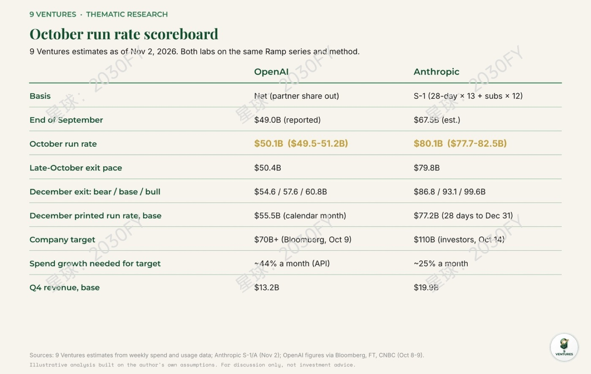
本周是校期中考试周，因此主要更新下自己的实习规划
实习规划
研一上学期 & 研一下的前半学期：主要有大量的学校课程和考试，主要任务在积累、跟踪
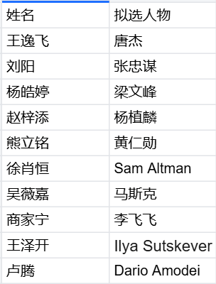
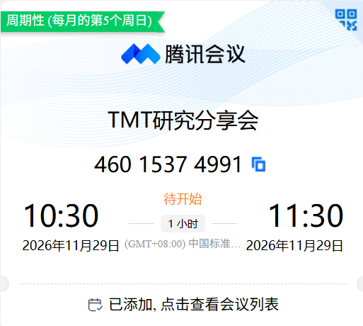
研一下学期：大类任务总体是不变的，但是课题的研究权重逐渐增多，支持更多task
2026.11.17 点评——AI现状
所有的紧缺都是基于原有的采购速度，如果采购速度放慢，capex下调，价格卷起来，开始还能期望以量补价，但高增长就别想了，后期就是量价齐跌。7月份还停留在叙事层面的担忧，现在更多是基于供应链的实际情况和未来政策趋势，大概率27年Q2就会在报表层面体现出砍单的影子，营收环比不再增长，毛利率出现下滑，存货显著增长
很多人一听砍单，第一反应是AI不行了，完蛋了。新能源21年的大顶之后不耽误新能源车渗透率提升。但是，AI是AI，硬件是硬件，这完全是两回事，投资和产业一定要分开，独立思维的两套东西。微软、谷歌、亚马逊、Meta 这几家大CSP今年囤的料太猛了，耗费了很多现金流，或者说大家因为某种原因都冲动的停不下来。所以砍单不等于需求消失。它是先砍库存冗余，砍完了、发现还够用，才轮到真需求。这个顺序很重要，因为如果先砍真需求，机柜就交不出货了，没人敢这么干。所以要砍一定会先砍囤货多的，砍了影响不大的。这个影响不大总体来说就是，零部件占比较低，产业上游短期会扩产的，再采购的时候能迅速补库的。
按这个标准，这第一刀就会砍液冷/光模块/MLCC等。之前CSP囤货很离谱，上半年光模块拼命备料，按1: 1.8 倍预留库存；液冷/电源模块大概买了1.3倍库存；mlcc下半年一个季度囤到了1.5倍的库存。正常情况下，多预留10%就可以了。 然后砍capex大头就控制存储采购就好了，英伟达之前堆存储堆得太狠了，包括这些csp也是，基本都按1.5倍备货，nand价格已经开始向下了，dram也快了,唯一能稍微坚挺的就剩hbm了。
最后按道理讲，GPU和ASIC应该影响最小，目前各家库存是最低的，这种属于你砍了最后很难再拿到货，社会上富裕的库存全在几家和英伟达绑定的新云手里，所以说电力问题影响确实大，大到基本可以直接决定新云的生死。但反过来想，未来新云倒闭释放的库存反而会对AI链形成反哺。
台积电产能排得紧，CoWoS 先进封装和基板也紧张。谁砍单，就会有大量的需求端顶上。如果有一天听到台积电被砍单了，那AI真的是完蛋了。
还有，这种砍单千万别线性外推，也就是说砍单极有可能停留在一到两个季度，大厂砍两个季度的capex，现金流会恢复的异常快，这两个季度的缓歇也会让产业链上游有充足的扩产时间。这完全是个博弈了，后面会看到一个惊人的现象，价跌了，量反而扩出来了，历史就是这么不断的重复上演
AI链还要不要看？对于刚进入新手村的伙伴应该完整的跟踪完这轮ai周期，历史还会再下一个景气品种里重复这套逻辑。
A股真的没什么基本面，只能耐心等，忍不住就去和游资玩连扳，炒垃圾都比搓基本面强。这轮超级周期完全由海外csp主导，它们的基本面稳了，我们才能看，它们讲出叙事逻辑了，我们才能跟。
关于国产这块，关键就是交流接下来被锁死的情况下，中国模型的进展会如何
2026.11.17 点评——BIS新规：限制远程获得半导体（26.11.16公布）
核心思路：① 打开代差，彻底干掉中国开源模型；② 用闭源AI+高价算力，向全世界贩卖Token
Challenge：
原文：
【中金互联网】美国BIS发布AI芯片远程访问新规：海外数据中心向中国等国公司提供超1,200万TPP算力须申请许可，存量须在90天内补办
美国商务部工业与安全局（BIS）于11月15日发布暂行最终规则（IFR），规则自刊登于联邦公报之日起生效，意见征询期60天。
一、远程访问管制：适用于全球数据中心，存量须在90天内取得许可
1）如知悉数据中心（含通过网络互联、共享资源的多个数据中心）向总部或最终母公司位于澳门或D:5国家组（含中国）的公司提供超过1,200万aggregate TPP的算力（约334张B200），相关先进计算芯片及服务器（ECCN 3A090、4A090等）的出口、再出口和境内转移须申请许可，适用于全球任何地区的数据中心，许可逐案审批。
2）规则发布前已在向上述公司提供大量算力的数据中心，如需继续服务，须在规则生效后90天内取得许可，否则将面临后续出口限制；芯片持有人是否参与最初的出口交易不影响适用，数据中心转为服务上述公司视为境内转移，须取得授权。
3）数据中心向其他客户提供算力、而该客户为上述公司训练模型或向其提供模型的，同样适用；数据中心须对客户开展尽职调查，识别是否被中国或澳门主体直接或间接持有或控制。
4）仅用于商业推荐系统（如电商、社交媒体）的算力不受此限，但须向BIS报备；生成文本、图像、音视频、软件的AI系统，或包含此类模型的系统，即使兼有推荐功能也不在豁免范围内。
5）BIS同时明确，现行规则一直覆盖上述公司作为采购方、或作为数据中心主要远程用户（使用超过50%算力）的交易，违规者应主动向BIS自我披露。
二、新增五国许可要求
1）向印尼、马来西亚、新加坡、泰国、巴西出口、再出口或在其境内转移先进计算芯片均须申请许可，商务部长可增列其他国家；许可逐案审批，审查时考虑目的国出口管制体系的有效性及与BIS的执法合作。
2）最终收货人或最终用户为美国总部公司（或最终母公司位于美国）的，可免于许可，但出口方须每月向BIS报告交易明细。
三、其他
1）收紧对晶圆代工厂和封测厂的推定规则：位于D:1/D:4/D:5国家组或上述五国的芯片设计公司，不再能通过相关途径推翻其先进逻辑芯片属于管制物项的推定。
2）正式废除拜登政府时期的《AI扩散规则》，取消国家分级、数据中心VEU授权及模型权重管制。
FCC：① 不管最后如何，这一块一直会有博弈。二三线肯定会越来越差，龙头可能短期影响尚可，但至少对于估值有点像达摩克里斯之剑——结果就是我觉得给不了15xPE；② 炒股上，跟SOX走，AI beta不行肯定拉完
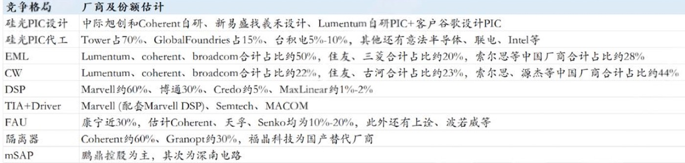
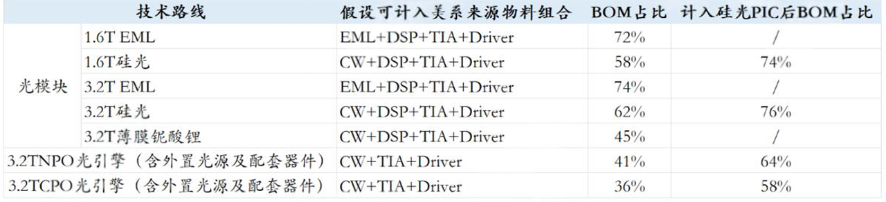
其他讨论：
https://mp.weixin.qq.com/s/PxsoW1CLQvg_PfR2Fv4oKg
账面数字为什么不能用
要搞明白中国用了多少N卡，第一反应是去翻英伟达财报里的中国区收入。这条路走不通。
英伟达最新一个季度，也就是截至2026年7月26日的2027财年第二季度，中国含香港收入是78.8亿美元，占总收入8%。上半年合计124亿美元。
但是这个数字是按客户总部所在地统计的，里面有游戏卡、工作站卡、车用芯片和网络产品。真正的数据中心GPU，也就是获批的H200，英伟达自己说当季出货不到数据中心收入的1%。
也就是说，账面上中国区那8%，绝大部分不是我们要找的AI算力卡。而我们要找的那些卡，买单的是美国、新加坡、中国台湾以及马来西亚的公司，在NV的财报里都不属于中国区业绩。
要搞明白这个问题，我们还得先换一个视角才能一步一步真正搞清楚全貌，那就是先从国内CSP是怎么拿到算力的这个角度去看。
为什么非N卡不可
在算账之前，得先把一个技术问题讲透，如果这个基础逻辑你没搞明白，那你思考的一切都可能是错误的，这个前提就是为什么国内CSP必须要N卡，而国产卡只能承接一部分特定的负载。
很多人的逻辑是，N卡买不到，那就只能买国产卡，用这种非黑即白的逻辑去设想国产卡会放大量。但是已经经过那么多年，但凡我们动动手指去计算一下相关收入，就能明白这个逻辑从来就不成立，现在我们在从芯片、互联、软件、成本四个技术层面来看一次。
先看芯片本身。AI芯片的能力主要由三样东西决定，制程、HBM和先进封装。
制程上，国产卡用的是国内7nm级的工艺，没有EUV，靠DUV多重曝光做出来。而英伟达的Blackwell用的是台积电4nm级，下一代Rubin是3nm。制程差两代，意味着同样面积里的晶体管数量和每瓦性能都差出一大截。
HBM上，决定大模型训练和推理吞吐的其实是显存带宽，也就是每秒能从内存里搬多少数据给计算单元。英伟达用的是HBM3E并且马上切到HBM4，国产卡只能用到上两代的产品，而且还拿不够。寒武纪三季度收入只有35亿元，远低于市场预期，公司给的原因就是HBM缺货。
所以落到单卡上，寒武纪的思元590大致对标英伟达的A100，升腾的主力型号在Hopper这一代附近。跟现在出货的Blackwell Ultra相比，中间差了两到三代，两三代的代差是数百倍的功耗比，有哪个厂家自愿去买落后那么多的芯片？
再看互联，这一层比单卡更要命。大模型训练是把一个任务拆到几万颗卡上同步计算，每一步都要在所有卡之间同步梯度，所以集群的速度是由卡与卡之间的通信决定的。
英伟达的做法分两层。机柜内部用NVLink做scale-up，也就是把72颗GPU连成一个共享内存的整体，当成一台超大的机器来用。机柜之间再用InfiniBand或者以太网做scale-out，把成千上万个机柜连成集群。
国产卡缺的正是scale-up这一层，高速SerDes和交换芯片都跟不上，所以只能靠scale-out去堆数量。阿里说它的新芯片可以堆到50万颗一个集群，这其实就是笨方法。
堆数量的问题在于，卡越多，通信开销占比越高，集群的有效算力并不是线性增加的。而且十万颗卡连续跑几个星期，任何一个节点出故障都要从检查点重启，单卡的可靠性不够，整个任务就跑不完。
然后是软件。英伟达十几年积累下来的CUDA，不只是一个编程接口，而是一整套算子库、编译器和调优工具。研究人员每提出一种新的模型结构，在N卡上基本是当天就能跑。
到了国产卡上，新结构里用到的算子很多没有现成的实现，要工程师一个一个去移植和调优，精度和性能还要重新对齐。对于模型每几个月就迭代一次的CSP来说，这个时间成本是不能接受的。
最后是成本，这才是CSP真正算的账。CSP看的不是一颗卡多少钱，而是每产出一个token的综合成本，也就是把卡的折旧、电费、机房和运维全部摊进去的TCO。
国产卡单卡便宜，但是单卡产出的token少，每瓦产出更低，同样的算力要占更多的机柜和电力，还要搭上更多的工程师。全部摊下来，国产卡每个token的TCO是明显高于N卡的。
所以国产卡现在能承接的，是模型权重已经固定、算子适配一次就能长期运行、对时延不那么敏感的推理负载，比如推荐、搜索排序、内容审核，以及固定版本大模型的推理。这些需求其实也不算少，加上国产AI芯片的出货基数很低，寒武纪也才十多万颗的水平，所以国产AI芯片在这几年的增长率非常高。
但是前沿模型的训练和最新模型的大规模推理，这些真正的算力需求所在还是只能放在N卡上。
这就是我们看到的现象，中文互联网整天吹国产AI芯片多好，国产大模型纷纷完成适配。但适配只是说明能跑，不等于跑得划算，更不等于大量采购，国产AI芯片增长虽然非常高，但出货绝对量很低，出货金额更是不高。
当然，笔者并不是说国产卡没有前途，如果HBM和先进制程的产能有一天真的打通了，局面会不一样，未来几年国产卡的增长还是会一直突飞猛进，因为国产卡也会进步，国内的需求也会越来越多。
但数量级跟占比大家别搞错了，国产卡真心不高，甚至占比低到你想不到。
讲清楚了为什么非N卡不可，下面我们就用最有代表性的字节跳动来算一笔账，把钱到底花在了哪全部摆出来，我们就能一目了然，为何炒作半天的国产卡，量级怎会如此之低，让大家有个直观的比较。
字节的2000亿花去哪了
字节是国内算力投入最大的一家。它2026年的资本支出最初计划是1600亿元，5月上调到2000亿元以上。
有了这个总数后，我们就能把它在国内买卡的钱一项一项加起来，看看跟2000亿差多少。
先算合规的N卡。今年二季度到三季度，国内批了一批H200，字节和腾讯各到货约1万颗。我们往高了算，按字节全年最多2万颗。
H200单颗的售价在2.5万美元以上，装进服务器之后，一颗对应的整机成本必然超过3.5万美元。所以2万颗就是7亿美元出头，折合人民币约50亿元。
再算国产卡。寒武纪前三季度收入95亿元，全年大约是135亿元。我们做一个最极端的假设，寒武纪全年收入全部来自字节，那就是135亿元。请注意这是一个最极端的数字。
字节还买了一部分升腾和天数智芯，这部分我们也用最乐观的数字，大约是寒武纪的一半，也就是70亿左右。
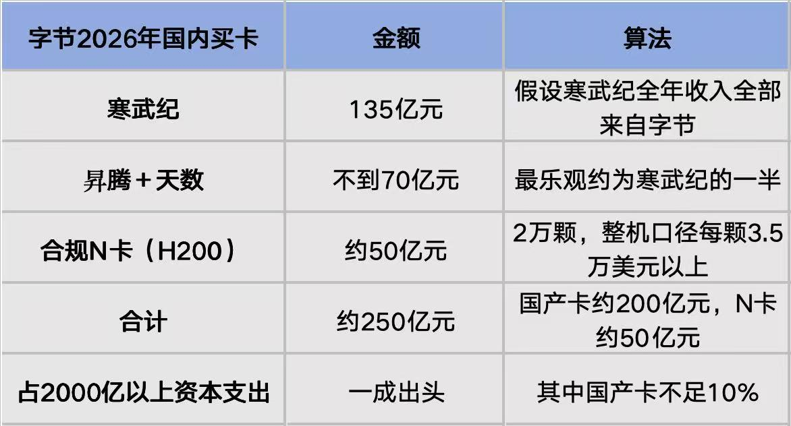
以上就是字节在国内买卡的全部。也就是说，哪怕假设寒武纪的收入全部来自字节，字节今年买国产卡也就是200亿左右，买N卡50亿，总共250亿左右。
250亿跟字节全年算力高达2000亿以上的资本支出，有天差地别的落差。如果只看国产卡，200亿对2000亿以上，占比不足10%。
当然这还是往高了算的。寒武纪的客户不可能只有字节一家，升腾跟天数也很难有寒武纪的一半，所以字节真实买国产卡的金额只会比200亿更低。
所以大家一定得搞明白这一点，整个中文互联网没有人算过这个比例，但这不是很简单的基础逻辑吗？
整个市场都在喊禁止英伟打没有N卡，那就只能买国产卡，国产卡要卖爆炸，可事实上国产卡只占CSP资本支出不到一成，他们根本不愿意大量采购。
那剩下的一千七八百亿花到哪去了？答案在下面两节，先看国内算力的市场结构，再看CSP拿算力的六条路
国内算力其实是三个市场
国内的算力资本支出，不能混在一起看，因为里面是三个逻辑完全不同的市场。
第一个是跟政府有关的市场，包括地方政府主导的智算中心和运营商的数据中心。这个市场的特点是必须用国产卡、国产服务器、国产交换机，这是国产卡的主场。
但是这个市场的算力闲置率非常高，很多是政绩工程，对AI芯片真实性能几乎不在意，商业价值不高。运营商的云相对好一些，比地方智算中心更有商业逻辑。
这个市场以升腾为绝对主力，升腾今年出货载百万级别大部分都在这，国内第二梯队的AI芯片企业，大部分的智算中心交钥匙工程大部分也在这。
前两年运营商是N卡的最大购买者，去年底才开始减少。
第二个是民营的独立数据中心，建好之后以租赁算力为生。这些数据中心大量扎堆在有政府补贴的地方，比如内蒙古等地。
因为是靠出租算力赚钱，所以这个市场必然要有竞争力的卡才租得出去，不太会用国产卡。这里正是国内走私N卡最大的买家，前两年最大买家是国内运营的云部门。
彭博去年就报道过，中国西部沙漠里有运营方在建几十个数据中心，规划容纳11.5万颗受限的N卡。美国官员现在的判断是，实际走私进去的数量已经超过了这个数。
第三个才是国内的CSP。CSP是纯纯的商业逻辑，一定要买有竞争力的卡，否则成本就比对手高。但是因为N卡随时会被卡，所以为了供应链安全，一定要培养国产或者自研，开辟不同的供应来源。
所以国产卡在CSP这里的定位，是备胎，不是主力。
弄清楚这三个市场以及他们的不同逻辑后，我们才能往下去探索CSP拿算力的全部渠道。
CSP拿算力的六条路
国内CSP获取算力的渠道，按重要性排下来一共有六种。这也是全网只有笔者可以清楚把这些渠道全排出来，毕竟我定期会跟国内的CSP上课培训，前两年还宽松的时候也帮忙介绍过N卡服务器进入国内，所以我会清楚CSP们的做法。
第一是海外数据中心。这是最大的投入，占资本支出超过一半，是绝对的大头。字节2025年的预算里就有大约一半是投在海外的，另外还有每年几十亿美元的海外算力租约，这部分很多算经营费用，连资本支出都不进。
第二是合法合规买N卡。很多人以为这条路是被美国卡住的，其实现在卡的是国内。
今年1月，美国把H200对华出口改成了逐案审批，三大厂年初拿到的额度合计超过40万颗，到5月已经有大约10家中国公司获得美国的许可，每家上限接近10万颗。
货也确实发了，2Q拿到第一批，但是目前有大约60万颗H200放在香港的仓库里，等着进内地。既然货都已经出了美国，那卡住它的自然不是美国政府。
卡住它的是国内的进口审批。每一单都要主管部门单独批，到现在几家大厂各自只进来了约1万颗，市场预计最终放行的总量不到20万颗，而且要求推理优先用国产芯片。
也就是说，国内的态度是训练可以用一部分N卡，但不能让N卡把国产卡的市场全占了。这60万颗就这样悬在香港，国内CSP的朋友，对这种局面都快急哭了，眼睁睁看着AI算力需求大爆发。
第三是非法的N卡，也就是走私。这条路前两年是每年十几万到二三十万颗的水平，今年大幅度减少，下一节会给出大概的具体数字。
第四是租赁算力。大部分走私进来的N卡，其实在上面说的民营数据中心里，CSP是去租这些算力。大型CSP自己很少直接买走私卡，因为风险跟它的体量不相称。
第五是自研ASIC。阿里的平头哥自己公布的是，这两年累计的总出货量在今年年中是47万颗，到9月已经是56万颗，年化就是30万颗以上的水平。这个量已经远远高于寒武纪去年全年十几万颗的出货。
这里要特别说一下代工。平头哥以前用台积电，现在用的是三星的产能。不只是平头哥，百度的昆仑芯和字节还没有出片的自研芯片，也全部都在三星。这条路其实是有风险的，文章后面讲出路的时候会展开。
第六才是国产AI芯片。根据刚才字节的账，这一环在CSP的资本支出里是非常小的一环。
这也解开了为何CSP这么大的资本开支，N卡又买不到，怎么国产卡的总收入会如此之低的疑问，这才是真正的产业现实，而不是你幻想的禁止N卡，国产卡爆了的简单逻辑。
以上六条路摆在一起，结论就很清楚了。并不是因为中国算力需求大，所以有很多N卡走私进了国内。应该反过来说，国内CSP买了很多N卡，因为只有N卡有竞争力，用其他卡每个token的综合成本都更高，但这些N卡大部分都在海外。
所以如果用国内总算力需求去倒推国内有多少N卡，將会出现很大的出入。合规进来的和走私进来的，远远撑不起国内的算力需求。
那海外到底有多少？这就是下一节要测算的。
中国到底用了多少N卡
这一节我们把合规、走私、海外三块全部算出来。先说明，这些数字不可能精确，但量级是可以收敛的。
先算合规进国内的。上面说过，几家大厂各自只进来了约1万颗H200。考虑到下半年还有几家陆续获批，笔者估计2026年全年真正进到内地的是5到10万颗，对应英伟达收入12到25亿美元。
停在香港的那60万颗我们不算进来，因为它们没有交付，不是中国真正用上的算力。当然这是一个变量，如果国内哪天放行了，我们模型的合规这一块会一下子多出来150亿美元以上。
再算走私进国内本土的的。研究机构Epoch AI的估算是，2024年约17万颗，2025年约28万颗，到2025年底累计约47万颗。以性能或算力输出而不单以卡数，这个累计量大约是国内全部AI算力的30%以上。
但是2026年情况变了。3月超微电脑联合创始人因为涉嫌走私25亿美元的N卡服务器被捕，这条最大的通道被打掉。此后国内一台B300服务器的价格从约400万元涨到了约700万元，后续甚至传出上千万的价格，但有行无市，这接近美国售价的2~3倍。
另一组数据是，经马来西亚和新加坡走私的量，今年上半年比去年上半年下降了约82%。所以笔者估计2026年全年走私量在10到20万颗，对应英伟达收入40到80亿美元。
最后算海外，这是最大的一块，也是最难算的一块。我们不用别人的折算口径，笔者认为直接用数据中心的电力来算，因为电是藏不住的，我们算好之后也可以横向对比其他媒体算出来的去验证。
根据Epoch AI的数据中心数据库，东南亚有四个跟中国公司高度相关的园区，分别是万国数据海外平台DayOne在柔佛的两个园区、巴淡岛的一个园区，以及字节作为租户的柔佛MY06。
这四个园区的IT功率，2025年底是326MW，到2026年10月已经是1210MW。也就是说，2026年不到一年新增了约880MW。
有了新增的电力后，我们就能换算成卡的数量。一颗Blackwell级别的GPU连同配套的CPU、网络和存储，大约要2kW的IT功率，那么880MW装满就是约44万颗。
当然这些园区不是全部给中国公司用，DayOne大约七成收入来自字节，所以我们按七成算，是约30万颗。再加上这四个园区以外的泰国、日本、巴西、挪威、印尼等地，笔者估计2026年海外为中国新增的N卡是30到45万颗。
一颗Blackwell级GPU给英伟达带来的收入，连同网络产品大约是4万美元，所以这30到45万颗对应的是120到180亿美元。
这个数字我们可以用钱来交叉验证。字节资本支出2000亿元以上，一半以上在海外，那就是1000多亿元，其中五六成是GPU，就是70到90亿美元。阿里通过Megaspeed一家在一年多里就拿了48亿美元的N卡设备，腾讯在日本大阪租了1.5万颗B200。三家加上月之暗面这些模型公司，合起来也差不多落在120到180亿美元这个区间。
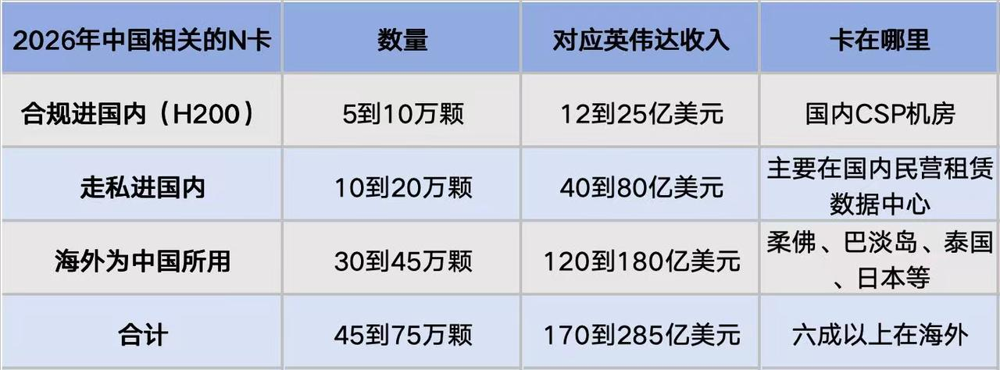
以上就是2026年中国相关N卡的全貌。简单说，中国今年用的新增N卡，每10颗里有6到7颗根本不在中国。当然这些都是笔者根据行业逻辑，从不同的多个面向，不断推演，不断验证，不断收敛得出的测算。
占英伟达业绩多少
有了170到285亿美元这个数，我们就能算它占英伟达多大的盘子。
英伟达2026自然年的数据中心收入，按已公布的三个季度加上四季度指引推算，大约是3700亿美元。那么中国相关的部分占5%到8%。
其中海外为中国所用的这一块，占3%到5%。走私占1%到2%，合规的H200连1%都不到。这就是中国买N卡的真正比例。
当然这里面没有包含中国CSP们向海外租赁的算力，把这一块算上，那整个中国算力对N卡的使用率会提高不少，或许达到15%甚至更高也说不定，再加上国产卡的算力，整国中国算力需求占全世界的20%，这个数字基本上就符合逻辑了。
如果往前看一年，走私比例其实更高。2025年走私是高峰，有28万颗，加上海外的部分和禁令前卖掉的46亿美元H20，笔者估算中国相关的部分占英伟达2026财年数据中心收入一成出头。
也就是说，今年以来，不论从任何渠道走的N卡对英伟达的收入，中国相关的占比是在下降的，从一成出头降到了5%到8%。原因很简单，分母在一年里翻了一倍，而走私这条路今年被打掉了一大半。
做空机构Culper说英伟达2026财年有20%以上的算力收入来自中国，按这个说法是430亿美元左右。笔者的结论是这个数字高估了差不多一倍，它把东南亚的出货几乎全算成了中国需求，这是做空报告的惯用手法。
当然还是得重申，哪怕只有5%到8%，也是两三百亿美元，放在任何一家公司都是天文数字。只是对于现在的英伟达，它确实不构成命门。
算清楚了量和占比，下面要回答大家最关心的问题，美国这次到底会不会动海外这一块。在这之前，先纠正一个流传很广的错误说法。
東南亞N卡灰产真有五倍暴利吗
这两天有一种流传很广的说法，说N卡渡过太平洋价格就翻五倍，整个东南亚算力是建立在500%利润上的灰产，资金来自影子银行，雷马上要爆。
这个说法结构是存在的，但数字几乎都是添油加醋。
讲对的部分是结构。因为美国规定，只要最终母公司在中国，哪怕子公司开在新加坡，买先进算力卡也要许可证。所以大厂确实不能自己持卡，需要第三方持卡，大厂再去租。
阿里和Megaspeed就是这个结构。公司注册文件显示，阿里通过子公司给Megaspeed提供了贷款，Megaspeed拿钱买卡，再把算力租给阿里。
讲错的部分是五倍，小作文试图用夸大的数字让市场相信。
我们用公开的合同来算就知道了。腾讯跟甲骨文签的那笔租约，五年70亿美元租10万颗卡，摊下来一颗卡一年1.4万美元，一小时1.6美元，这是再正常不过的长约市场价。
Megaspeed买卡也一样，48亿美元对应十几万颗，一颗3万多美元，跟美国客户的采购价没有区别。
真正有溢价的只有走私进国内的那一小块，而且溢价是接近两倍，不是五倍，还是在今年通道被打掉之后才涨上去的。
所以把海外租赁说成刀口舔血的暴利灰产是不对的。它在美国现行法规下是合法的，价格是市场价，连麦格理这样的大银行都在给这类项目放贷。海外这一块的风险不在于它违法，而在于法律可能要改。
这就带入下一个问题，法律会怎么改。
美国这次要怎么卡
先交代背景。限制实体GPU出口却不限制远程使用，这个漏洞美国两年前就在讨论了。
2024年初商务部提过云服务实名制的规则，没有落地。拜登政府下台前的AI扩散规则里有相关条款，2025年5月被特朗普政府废掉。《远程访问安全法案》2024年在众议院过了一次，卡在参议院。
所以大家印象里相关法律好像一直有，但一直没效果。其实不是被绕开了，而是从来没有真正生效过。
为什么一直没生效？按Axios的报道，特朗普本人今年5月、8月和11月5日三次同意对芯片走私采取行动，三次都被商务部长卢特尼克拖了下来，理由是会引发对华贸易战。而英伟达在黄仁勋手上，一直是这些法案最大的反对者。
现在这两个阻力同时松动了。黄仁勋走了，卢特尼克自身难保，白宫内部已经在讨论要不要换掉他。而民主党明年1月接管国会两院，正好跟共和党鹰派合流。
具体会落下来的有三样东西。
第一是商务部的新规。据The Information报道，商务部正在敲定一条规则，最快本月公布，把新加坡、马来西亚、泰国、印尼、巴西、挪威、南非七个国家纳入管制。
这条规则的做法是，Blackwell及以上的卡进这七个国家要许可证，进口方要报告卡给了谁、怎么用。美国公司在当地运营的数据中心可以免许可证，前提是屏蔽来自中国的远程访问并上报客户。
大家对照一下文章前面的测算就会发现，这七个国家就是按中国CSP海外算力的地图画出来的，柔佛、巴淡岛、泰国、巴西、挪威一个不落。
第二是立法。《远程访问安全法案》今年1月已经在众议院以369比22通过，现在等参议院。沃伦和班克斯推动的AI OVERWATCH法案已经写进参议院版本的国防授权法，还有要求芯片带位置验证的《芯片安全法》。
之所以要立法，是因为商务部那条规则有一个硬伤，现行法律并没有明确授权商务部去管远程访问，规则出来后很可能被告上法庭。立法就是把这个授权补上。
第三样东西不用等法律，那就是打招呼。11月初甲骨文取消了跟腾讯那笔70亿美元的租约，原因只是美国官员表达了关切。同一时间，广东方面也在劝腾讯多用国产卡。
这一点非常关键。它说明对于美国公司运营的数据中心，根本不需要立法，一个电话就够了。
那么问题来了，规则和法律落地后，技术上能不能绕开？
技术上绕得开吗
很多人觉得远程访问这种东西根本管不住，挂个代理换个IP就绕过去了。这个理解太表面了。
美国要管的不是中国用户，而是卡。新卡给谁不给谁，是英伟达和美国商务部说了算的。所以监管的抓手不在网络上，而在供应上，这是任何网络技术都绕不开的。
但是话说到这里只对了一半。很多分析认为，只要把违规的算力公司拉进黑名单，不给它下一代卡，这条路就断了。这是太不了解中国资本了。
拉黑一家公司，对中国资本来说根本无所谓。这家被拉黑了，那就再注册一个新马甲，换一个法人，换一个国家，重新去下单。这是中国资本最擅长的应对之策。
Megaspeed就是现成的例子。英伟达说2025年6月就已经停止向它供货，可是它的马来西亚关联公司一直买到了2026年2月。黑名单是事后追认的，换马甲的成本却几乎为零。
所以不能单纯认为不给下一代卡就能防住中国资本。真正的问题是，美国这次的新规有没有针对换马甲这一招。
答案是有的。新规的做法是把这七个国家从黑名单管理改成了许可证管理，也就是从事后拉黑变成了事前审批。任何一家公司要把Blackwell运进这七个国家，都要先拿许可证，并且报告最终用户是谁。
如此一来，新马甲的问题就变了。以前一个刚注册的空壳公司可以直接下几十亿美元的订单，以后一个没有历史、没有本地真实业务的新公司，是拿不到上百MW规模的许可的。
当然中国资本也不会就此收手。可以预见的对策有三种，一是不再新设空壳，而是入股或者借用当地有真实业务的老牌公司。二是换到七国名单之外的国家。三是把一个大集群拆成很多个小集群，分散到不同的主体名下。
这三种对策都能走通一部分，但每一种都有代价。借老牌公司的壳，对方要担风险，自然要加价。换国家，电力和机房要重新找，周期至少一两年。拆小了，就凑不出训练前沿模型需要的几万颗卡的单一集群。
所以笔者的结论是，这会变成一场长期的猫鼠游戏。美国卡不死中国资本，但能把量压下来，把成本和周期抬上去。小规模、分散的使用永远堵不住，大规模、集中的新增集群会越来越难。
而对CSP真正有意义的，恰恰是大规模集中的集群。那么换一种更干净的做法，行不行？
换一家纯东南亚公司来租行不行
有人会问，如果不是中国CSP出的资金，而是一家纯粹的东南亚数据中心，自己买卡，再把算力租给中国CSP，这样不违法吧？
在今天，这确实不违法。美国现行的出口管制管的是卡的出口和转移，不管算力卖给谁，这正是过去两年所有海外租赁的法律基础。
但新规则封的恰恰就是这个口子。它不看资金来自哪里，只看算力最后给谁用。进口方要报告最终用户，运营方要屏蔽中国访问，否则下一批卡的许可证就没有了。
那能不能中间再套一层，让一家新加坡的AI公司出面当客户？小量可以，大量很难。因为上百MW的单一客户是藏不住的，一个园区里这种体量的租户只有一两家，电力申请、预付款、融资文件到处是痕迹，谁在用、用来训练什么模型，运营方自己心里一清二楚。
Culper这样一家只有两个分析师的做空机构，靠翻新加坡和马来西亚的公司注册文件，就把阿里给Megaspeed的贷款翻了出来。美国政府要查，只会更容易。
还有一个问题是已经装好的卡。柔佛那1000多MW里的存量，美国能不能让它停下来？
法律上很难，卡已经在马来西亚，马来西亚方面也表示没有收到违法的证据。但这些园区的运营方都有美国的命门，DayOne正在申请赴美上市，Aolani是英伟达的一级云合作伙伴，谁都不敢为了一个客户赌上自己的未来。
所以笔者的判断是，存量大概率能继续用到合同到期，新增和升级换代会越来越难。对算力这个行业来说，下一代卡拿得少、拿得慢、拿得贵，存量两三年后也就没有竞争力了。
如果海外这条路真的被堵上大半，国内CSP怎么办？
堵死之后國內ＣＳＰ还有什么路
首先要说清楚，国内CSP不可能坐以待毙，也不可能只买国产卡。
你没有办法让一家纯商业公司，去大量采购没有竞争力的配件，然后跟采购得到好配件的对手竞争。真这么干，那是要倒闭的。
有人说中国可以补贴，电费便宜，可以把差距补回来。我们算一下就知道补不回来。
电费在AI算力的总成本里大约占一到两成，大头是卡本身的折旧。就算国内把电费打对折，总成本也只下降5%到10%。
而英伟达每一代卡，按它自己公布的每瓦token产出，上一代到这一代是十倍级别的差距，隔两代就是百倍级别。电费再便宜，降一半都很难，根本不可能去填十倍百倍的坑。
所以CSP一定会去找新的路，笔者认为按可行性排下来是这样的。
第一是换地方。规则列了七个国家，但日本、中东、欧洲、澳洲不在里面。腾讯已经在日本和澳洲有布局。这条路能走，但会变成打地鼠，而且只要运营方是美国公司，同样要屏蔽中国访问。
第二是合规的降规卡。除了前面说的H200要看国内放不放行，三大厂10月份向英伟达下了300多万张RTX PRO 5500工作站卡的订单，金额超过350亿美元。这是目前中国能合法买到的最强N卡之一。
但英伟达告诉客户，只能满足5%到10%，明年一季度才开始交货。而且在老黄走后，新管理层还敢不敢把工作站卡这样大批量卖给中国的数据中心，要打一个大问号。这就是笔者昨天说的矫枉过正。
第三是自研ASIC。平头哥已经是年30万颗的量级，百度有昆仑芯，字节的自研芯片也在路上。这条路看上去是CSP手里最实在的一张牌，但其实风险很大。
文章前面讲过，这三家的自研芯片全部押在三星。之所以是三星，是因为台积电已经全面停止了给国内AI芯片代工。
而在三星投片，走的其实是灰色地带。美国的规则是先进制程芯片的晶体管数量超过300亿颗就要受管制，所以这些芯片先要把晶体管数压在300亿这条红线之下，而且不能说是AI用途。
也就是说，三星是现在留下的一个漏洞。既然是漏洞，美国早晚会补上，老黄事件之后只会补得更快。
三星一旦被堵，CSP的自研芯片就只剩下国内产能一条路。而国内7nm级的产能，现在整体是勉强平衡的，主要供给昇腾和寒武纪这些国产卡。
如果CSP的自研芯片全部从三星转回来，每年几十万颗的量压上去，国内先进产能会严重不足。国内先进产能的具体数字，笔者的知识星球里有详细的模型，这里不展开。
而且还有一个更根本的问题，7nm确实落后国际主流太多了。台积电3nm已经大规模量产，2nm也在爬坡。即便未来国内有了足够的7nm产能，国产卡和自研芯片在制程上跟国际主流还是差着两到三代。
第四是走私。路透社的消息是，这几天国内灰色市场的贸易商已经开始囤货了。但这条路只会越来越贵，量也上不去。
第五才是国产卡。它会受益，采购比例会从不到一成往上走，但前面讲过，瓶颈在HBM和先进制程产能，不是CSP想买就能买到够用的。
以上五条路加起来，能让国内CSP活下去，但填不上海外那三四十万颗Blackwell的缺口，而且其中自研ASIC这一条本身还悬在三星这个漏洞上。真被堵上大半的话，国内CSP在前沿模型训练上会被拉开差距，推理成本会明显高于海外对手。
这对国内的AI产业是实打实的利空，对国产卡和自研ASIC是利好，但大家不要把这个利好想得太大，因为CSP买国产卡从来不是因为它好，而是因为没得选。
中国的AI产业核心重点是CSP跟大模型企业，他们才是AI的未来，不是芯片等硬件企业，这些核心企业没办法获得长期稳定高效的算力，没办法提高竞争力，整天耗费大量时间跟精力在搞算力的猫抓老鼠游戏，这对整个中国的AI产业发展是沉重的枷锁并不是帮助。
对英伟达到底有多大影响
最后回到开头的问题，这颗雷对英伟达到底有多大。
我们把文章前面的数字串起来。2026年中国所有渠道的相关的N卡对应170到285亿美元，占NV数据中心收入5%到8%，其中会被新规直接打到且量最大的东南亚或海外N卡，这个部分单独拆出来是120到180亿美元。
按原来的趋势，这一块2027年会继续放大，笔者估计会到200到300亿美元。考虑到上面说的猫鼠游戏，新规不可能把它全砍掉，中国CSP还是会竭尽全力想办法获取，笔者按砍掉一半来算，那就是少了100到150亿美元的中国需求。或者你认为这数字可会更高一点也没问提，你自己提高即可。
英伟达给出的2028财年（27自然年）指引是收入增长约70%，也就是接近7000亿美元。100到150亿美元放进去，是1.4%~2%左右。或者用马上结束的27财年的4100多亿收入，那也是2.5%~3.6%的区别。
而且这还是假设这百亿美元也就是一千多台Rubin NVL72卖不出去。事实上英伟达现在是供不应求的，中国CSP真买不了，这才一千多台NVL72美国和中东的客户会马上接走。
所以如此一来，结论就清楚了。这件事对英伟达业绩的实际影响真心不大，影响的是短期情绪和估值，不是未来英伟达的业绩
老黄下台，后续延伸的局面，真正受伤的是三类人。一是国内CSP，算力成本上升，前沿训练受限。二是东南亚那些客户高度集中的算力公司和数据中心，有的七成收入来自一家中国客户。三是给这些项目提供融资的机构。
英伟达11月以来股价已经跌了两成，这里面有相当一部分是在给“中国雷”定价。按我们上面的测算，如果英伟股股价继续下跌，长期来看是便宜的，当然短期股价受到消息的负面影响要下跌到多少我不清楚。
但是这时候我们更需要一个懂行且全面的计算，让我们心里有个锚，而不是自己吓自己。
结语
这篇文章讲了很多数字，最后笔者把全局串一遍。
中国到底用了多少N卡，不能看财报上的中国区收入，也不能用国内算力需求去倒推。得从CSP拿算力的六条路去看，合规的被国内自己卡在香港，走私的在萎缩，国产卡不到资本支出的一成，真正的大头在海外。
2026年中国相关的N卡是45到75万颗，占英伟达数据中心收入5%到8%，六成以上放在东南亚。做空机构说的20%是夸大，灰产五倍暴利更是添油加醋。
老黄事件真正改变的，是美国立法和执法的阻力没有了。监管从事后拉黑变成事前许可，换马甲这一招不再那么好用。但中国资本不会坐以待毙，这会是一场长期的猫鼠游戏，量会被压下来，卡不死。
对英伟达，这是2%左右的需求转移，在供不应求的当下几乎没有实际影响。对国内CSP，这才是真正的拦路虎，因为电费、补贴、国产卡都填不上代际的差距，自研ASIC又悬在三星这个早晚要补的漏洞上。
所以看这件事不能只盯着英伟达会不会少卖卡，要看的是全球算力这张地图上，中国CSP最终能站在什么位置。这同样是老黄下台之后，也值得大家跟踪的一条主线。
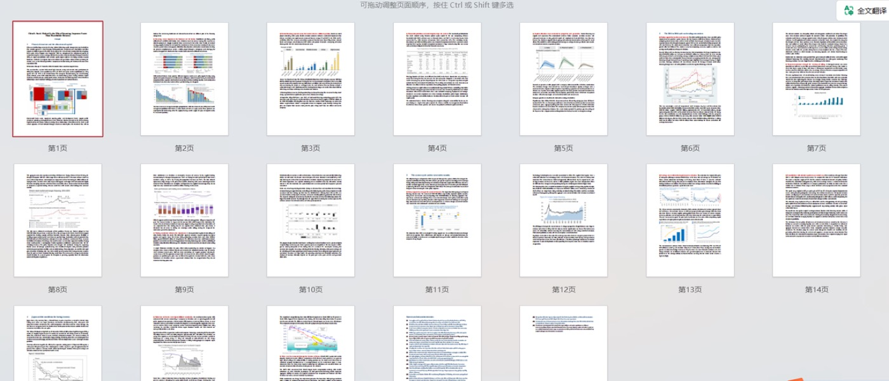
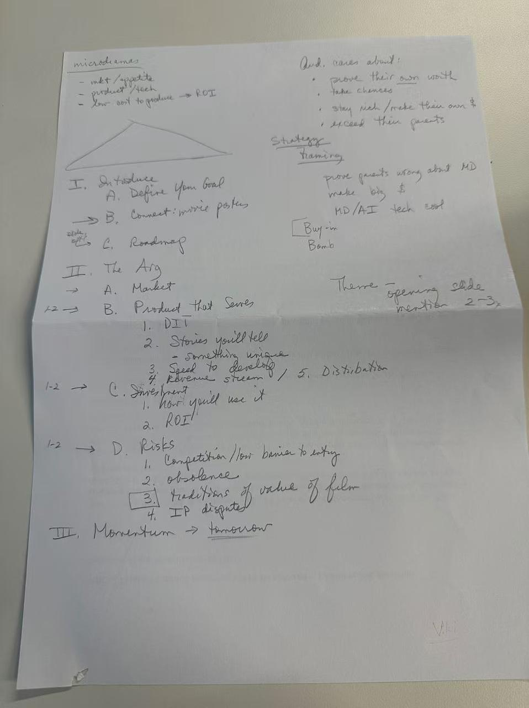
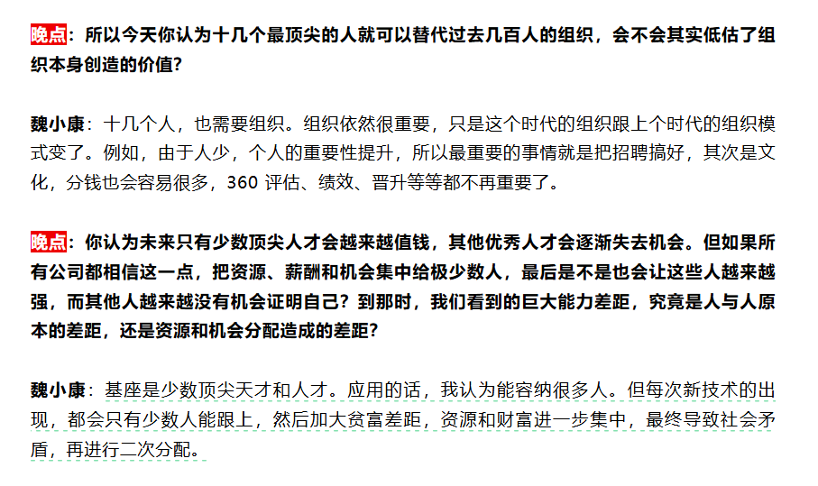
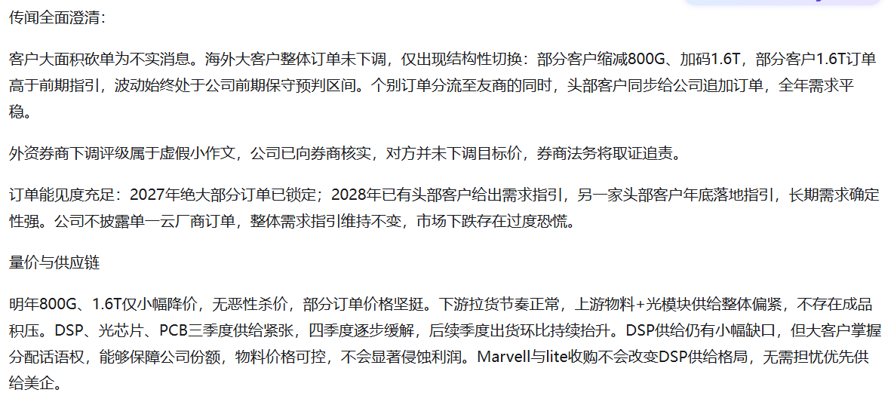
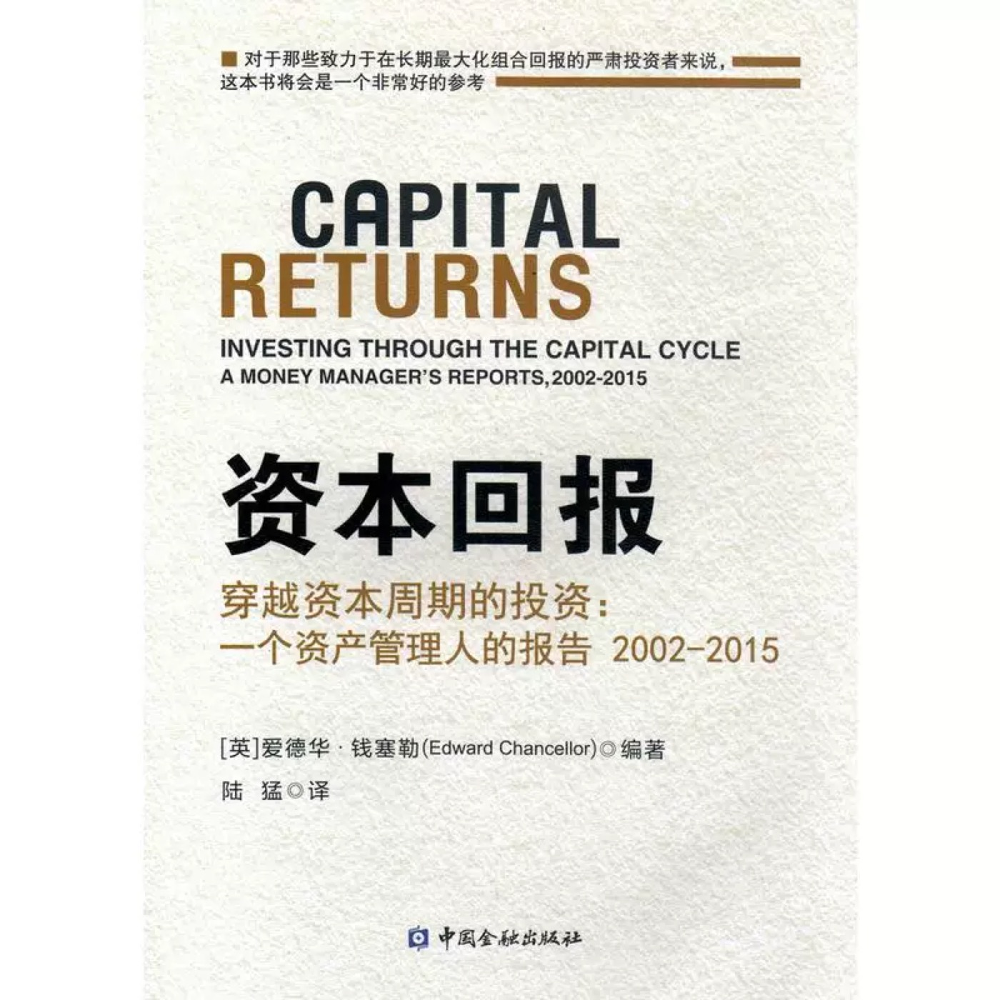
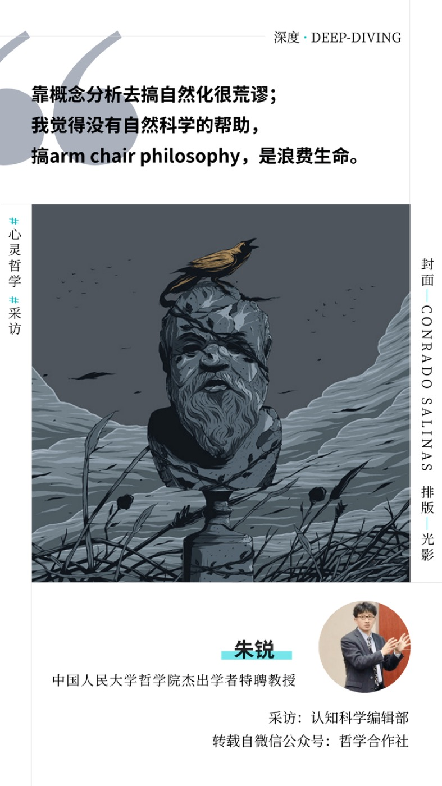
目标：此前已完成存储最关键的供需平衡表研究并完成交付，现在需要深入根据存储价格研究存储股价影响因素
1.梳理存储行业周期的共同驱动因素。 查找资料复盘1985年以来的主要周期，核心逻辑是高景气引发扩产，但新产能释放存在滞后；当需求转弱时，供给惯性容易造成价格和盈利快速下行。周期底部通常依赖原厂减产、资本开支收缩及高成本产能退出。我的理解是，存储行业判断不能只看当期需求增速，还要跟踪高景气阶段的投资强度和后续有效供给释放。
（1）2006-2009年：Vista预期落空叠加金融危机
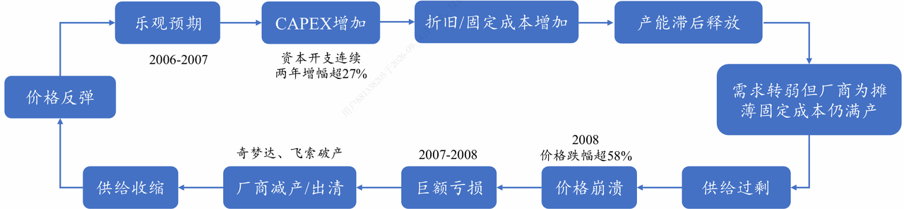
（2）2009-2012年：PC 增速见顶叠加天然灾害，慢性出清阶段
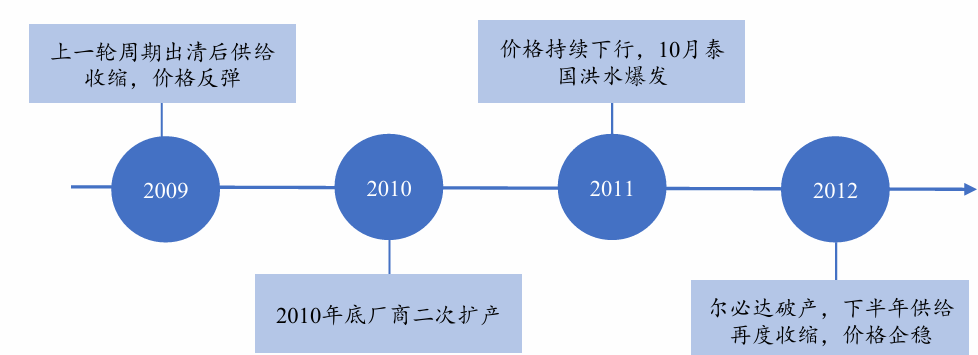
（3）2012-2015年：三寡头形成与移动需求接力
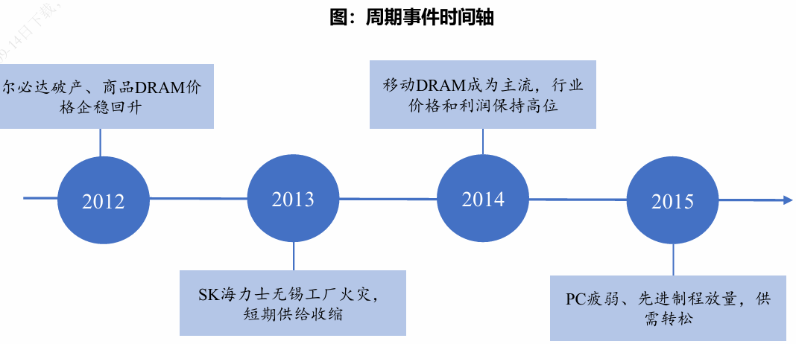
（4）2016-2019年：云计算与智能手机驱动的新一轮周期
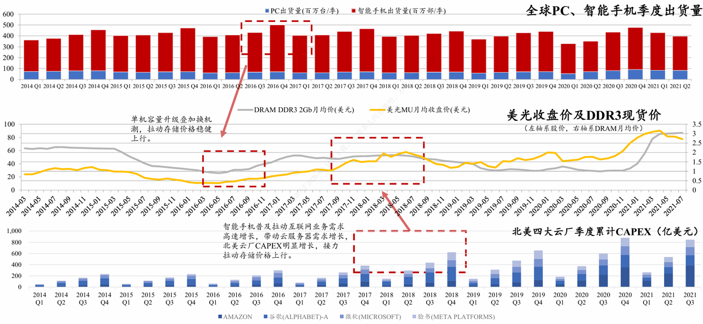
（5）2020-2023：疫情提前透支需求
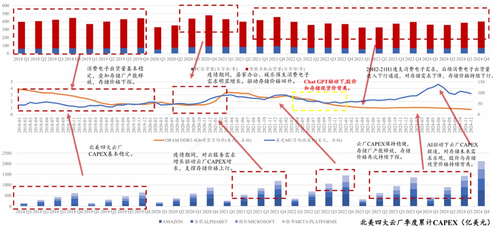
（6）2024至今：AI驱动下的DRAM与NAND共振
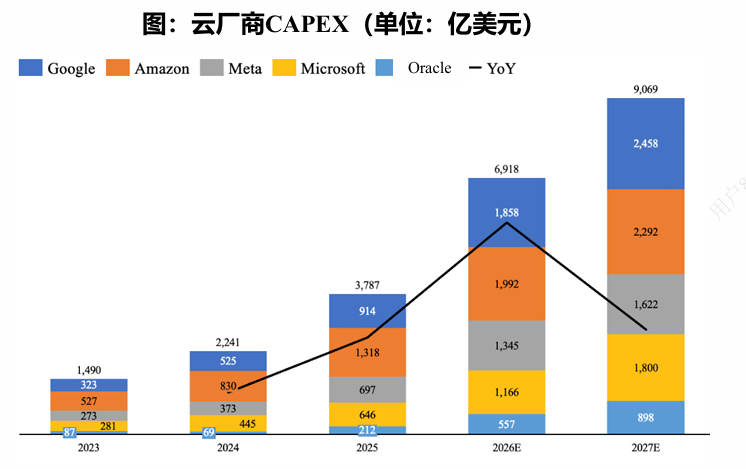
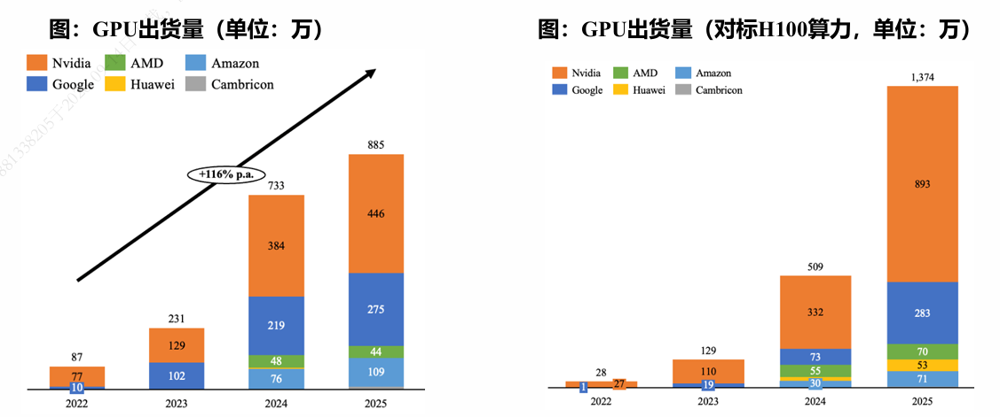
1.整理公司复权股价及匹配基准。 覆盖三星、SK海力士、美光、闪迪、铠侠、南亚科技、华邦电子和威刚。闪迪从2025年2月、铠侠从2024年12月上市后纳入，上市前数据留空；股价收益以月末复权收盘价计算，超额收益扣除匹配基准。
2.复盘历史周期价格与股价拐点。 2016年DRAM底部样本中，6家公司的股价底部均早于价格拐点，领先期中位数4个月、范围2—6个月。2018年DRAM顶部的领先期为-3至+4个月，中位数为0，顶部领先关系不稳定。2023年DRAM底部样本中，除南亚科技股价拐点晚12个月外，其余5家提前9—12个月。早期价格拐点参考券商复盘，股价极值按价格拐点前后12个月识别，作为事件复盘使用。
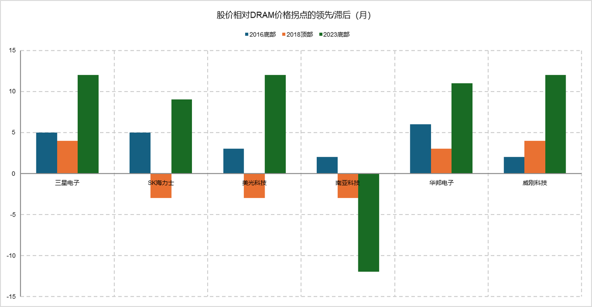
3.现货价格对合约价格的领先机制（反映出DRAM市场更灵敏更缺，与供需平衡表一致）
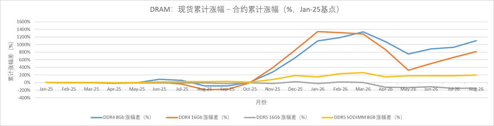
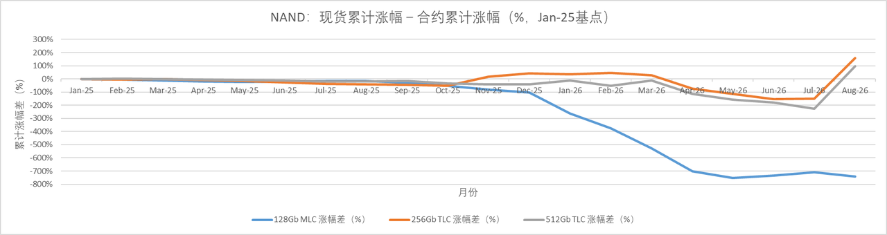
4.以美光为例，大的回撤往往来源于价格二阶导数转负
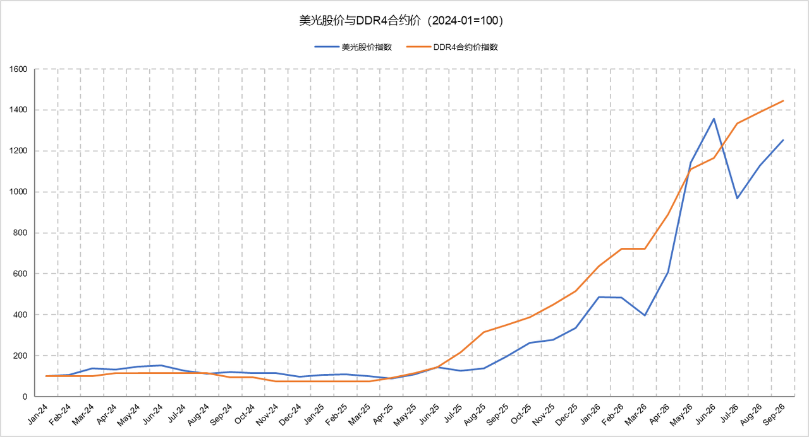
1.比较TrendForce 8月与10月两期远期价格预测。 按相同规格、报价类型和目标月份匹配，DDR4 8Gb现货月度预测平均上修5.3%，512Gb TLC晶圆现货月度预测平均下修23.8%，各有15个共同目标月份。两期预测反映DRAM与NAND远期预期分化，仅作为预测快照事件研究，不视为完整时间序列回归。
2.对照预测变化与同期公司超额收益。 8月发布至10月发布期间，美光相对SOX超额收益约+0.6个百分点，SK海力士约-6.0个百分点；闪迪约-13.7个百分点，铠侠约-30.5个百分点。同期DRAM现货预测上修，但部分公司股价跑输；NAND现货预测下修与NAND原厂跑输同时出现。股价还受到盈利预期、产品结构、库存和市场风险偏好影响，不能只看当期价格方向。
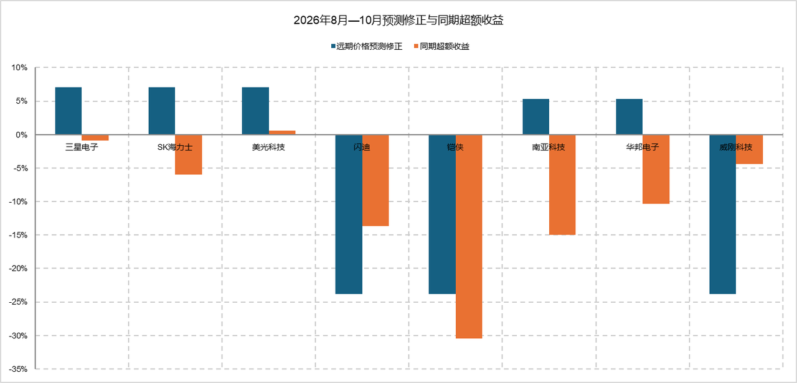
3.近两个月内对不同公司的比较分析
（1）三星电子：存储盈利创新高，但股价已开始交易盈利持续性。
DRAM价格预测上修约7%，同期相对SOX超额收益约-1个百分点。三星受益于HBM、服务器DDR5需求及产品结构改善，三季度存储业务盈利创历史新高。但股价表现相对平淡，反映市场对存储涨价和盈利改善已有较充分预期，后续更关注价格上涨持续性及中国厂商扩产带来的竞争压力。
（2）SK海力士：HBM景气度仍高，但高预期下股价对边际变化更敏感。
DRAM价格预测上修约7%，同期相对SOX超额收益约-6个百分点。公司三季度营收及营业利润继续创高，HBM4放量和2027—2028年产能长协为业绩提供支撑。但当前市场关注点已从HBM需求增长转向高盈利的持续时间，以及AI资本开支回报和中长期竞争格局，股价表现弱于美光。
（3）美光科技：业绩指引提供支撑，盈利上修成为相对收益来源。
DRAM价格预测上修约7%，同期相对SOX超额收益约+0.6个百分点，是三家DRAM原厂中表现最好的公司。美光FY2026第四季度收入达到542.3亿美元，下一季度收入指引进一步升至615亿美元，盈利增长具有较强的业绩验证。同时，HBM、服务器DDR5及SOCAMM等产品持续放量，市场对其后续盈利上修仍有期待。
（4）南亚科技：当期利润大幅释放，但市场开始担忧盈利高点。
DRAM价格预测上修约5.3%，同期相对SOX超额收益约-15个百分点。公司三季度DRAM ASP环比上涨超过60%，毛利率达到85.7%，涨价已充分反映至当期业绩。但股价同期明显回调，反映市场开始关注高ASP和高利润率的持续性，以及后续供给增加带来的周期反转风险。
（5）华邦电子：利基存储景气改善，但产品结构与竞争格局限制估值表现。
DRAM价格预测上修约5.3%，同期相对SOX超额收益约-10.5个百分点。华邦三季度定制化存储和Flash分别占收入58%和32%，受益于利基DRAM及NOR Flash需求改善，业绩表现较强。但其产品结构与通用DRAM原厂存在差异，市场同时关注成熟制程供给扩张、NOR Flash价格及收购整合风险，股价未能充分反映当期盈利改善。
（6）闪迪：企业级SSD需求强劲，但高预期下业绩兑现难度上升。
NAND价格预测下修约23.8%，同期相对SOX超额收益约-13.7个百分点。闪迪数据中心业务仍保持较快增长，企业级SSD需求并未明显转弱，但前期股价已计入较高增长预期，业绩公布后股价反而下跌，反映市场对盈利兑现的要求进一步提高。后续需重点关注企业级SSD订单、ASP及利润率能否支撑当前估值。
（7）铠侠：NAND涨价斜率放缓，盈利预期下修叠加估值调整。
NAND价格预测下修约23.8%，同期相对SOX超额收益约-30.5个百分点，表现明显弱于同行。公司此前受益于NAND价格上涨，但ASP环比涨幅已较前期明显收窄，下一季度营业利润指引亦低于市场预期。前期较高的盈利预期和交易拥挤进一步放大股价调整，反映市场开始交易NAND涨价周期的边际变化。
（8）威刚科技：DRAM业务占比较高，产品结构缓冲NAND价格下跌冲击。
NAND价格预测下修约23.8%，同期相对SOX超额收益约-4.5个百分点，明显好于NAND原厂。威刚并非NAND原厂，DRAM业务收入占比约70%—75%，股价对NAND价格变化的敏感度相对有限。但模组业务仍面临采购成本、库存跌价及终端售价下行的压力，后续需关注DRAM涨价带来的库存收益能否覆盖SSD业务的利润压力。
点击姓名打开飞书原文，点击卡片标题收起或展开内容。
第一部分 券商板块历史行情复盘
1、总览历次典型行情
共 10 次典型上涨行情，以及2 次上涨行情后的巨大下跌。
✅图：2005-2026 券商板块历史行情走势
1.1 长期收益特征&持有体验
研究指数长期走势、绝对收益、相对沪深300和万得全A的超额收益、收益分布、波动率、最大回撤及滚动持有收益。
券商股是否长期持有体验不佳，却存在阶段性极高收益的机会？收益是否高度集中在少数时间窗口？
问题一：长期持有券商股，相比持有市场指数，收益如何？
✅图：不同持有期限的滚动收益分布。例如，假设在历史上任意一个交易日买入券商指数，持有1个月、3个月、6个月、1年、3年：获得正收益的概率是多少？跑赢沪深300的概率是多少？收益率中位数、上下四分位数是多少？同样持有期限下，券商股的收益与市场基准有何差异？（使用箱线图或分布区间图，分别比较券商与沪深300的收益分布。）
问题二：券商股收益是不是集中在极少数时间里？
我们已经有10轮典型上涨窗口，因此可以计算：10轮上涨窗口累计覆盖多少交易日？上涨窗口外的累计收益是什么情况？如果错过表现最好的若干个交易日，长期收益会发生什么变化？券商与沪深300的收益集中程度有何差别？
✅图 ：券商股历史收益的时间集中度。优先做上涨窗口内与窗口外的累计收益对比，并辅以表现最佳交易日贡献的敏感性分析。（我觉得窗口外可以把两次巨幅下跌的也排除出去，那两次都是急跌）
问题三：长期持有券商，需要承受怎样的水下回撤？
除了收益，也应该研究长期持有中的风险。看整个历史上：券商指数处于历史前高以下的时间占比。连续处于水下状态的最长时间。回到历史前高需要多长时间。长期回撤深度的分布。（比较历史前高需要看看是否合理，1516 年杠杆牛之后我们再也没回到那个高点，看看是否需要换成类似上次行情高点之类的）
图：券商指数历史回撤及水下持续时间。一张完整历史的水下回撤曲线，配合最长未创新高时段标记。
1.2 典型上涨行情的横向比较
对10轮行情统一比较：绝对与超额收益。持续交易日数、上涨速度。行情内部最大回撤、阶段性震荡。相比市场指数的领先和滞后。行情见顶后的回吐程度。
典型上涨行情分为两种：一种是长期行情与收益特征（持续时间长，一般在 100 个交易日以上，A02、03、04、08，A01 其实也算但比较特殊，其持续时间较长、上涨幅度特别巨大，市场背景上都比较特殊，如果混入其他持续性行情的均值，容易显著抬高该组统计结果。）；一种是快速修复及政策性行情（持续时间短，A05、06、07、09、10），
问题一：两类行情的走势究竟有什么不同？
上涨过程是否集中于早期、是否经常出现明显调整、以及上涨速度是否相对稳定。
✅图：两类上涨行情的归一化收益路径
问题二：持续性行情的中途调整
研究持续性行情的结构。例如行情内部最大回撤、中途超过 10%、15% 的调整次数，最大一次内部调整持续多久，从中途低点重新创新高需要多久。
✅图：展示无论持续性行情的中途调整情况。这样能回答：持续性行情是否需要忍受更多的阶段性调整。
问题三：券商股领先市场还是跟随市场？
只在这一节做一个走势层面的比较，不要深入讨论因果。
例如计算每轮牛市里（券商的上涨区间一般是在一轮牛市里面的，我目测沪深 300 或者全 A、大盘是更晚到顶，所以一轮牛市基本上结束的比券商上涨区间晚），券商与沪深300谁更早达到高点？
之前的研究认为：在 05 股改大牛市和 924 行情之前，券商板块更早见到低点，在 15 年和 19 年行情，又更早见顶回落。09 四万亿的时候、1415 杠杆牛券商/沪深 300 的净值强弱也提前见顶，牛市最后 30%～60% 的冲刺阶段完全让位给其他主线，转为跟随甚至跑输。这部分我没具体研究，这块可以系统研究分析并作统计和作图验证。
这里我补充一下，总结来说，•3 轮券商提前见顶行情源于增量资金接力：07 年股改，15 年杠杆牛市，18 年估值纾困科创板，增量资金持续入市，上涨主线向其他行业扩散，推动券商见顶后全市场继续上行。券商分别提前万得全A 49、36、30个交易日见顶，万得全A随后仍上涨10.6%、33.7%、7.3%。散户开户、杠杆资金、北向资金作为三轮各自的增量主力，新增购买力流向其他行业上涨，推动市场形成第二阶段行情。
•7 轮行情同步见顶。信用和流动性：监管主动收紧或政策脉冲后没有得到数据验证。资金：缺乏场外独立增量资金和高质量的产业主线。
•券商板块超额收益集中于头和尾 25%。启动抢跑（中位+2.76%）、中段平庸（-0.81%）、尾盘暴走（+14.07%）”的头尾集中特征，9轮中（除杠杆牛）券商的超额顶和股价顶高度同步，顶后加速回吐，因此配置券商的核心策略在于熬过中段震荡、重仓吃满75%—100%的尾段冲刺红利，并坚决离场。
尾段冲刺这里，杠杆资金情绪进入极端过热区，潜在增量买盘接近枯竭，筹码高度拥挤。（融资买入热度 252 日分位比较高）猜测大概率行情从板块普涨演变为“缩容抱团高弹性龙头”的最后冲刺，板块内部广度开始背离。（传统大券商可能已经率先滞涨？东方财富这种高贝塔载体维持指数冲顶，相对证券 ETF 弹性＞0），猜测此时大盘蓝筹有资金托底，市场整体风险偏好未塌陷，主力得以利用稳健氛围在券商上从容派发筹码？解释了为何券商见顶后万得全A在多数周期中不会同步暴跌，甚至在 A01、A04、A06 中还能依靠权重搭台与主线切换走出 +7.30% ~ +33.68% 的下半场。 （沪深 300 20 日承接指标＞0）？
这部分我们在这里先不展开，后面我们到 2.4 去做择时分析的时候再去深入研究和验证下，看看有没更好更合适更准确胜率更高的办法。
图：还没想好怎么画。但我觉得可以画一些
1.3 上涨结束后的回撤与漫长调整
问题一：两轮典型暴跌
两次巨大下跌是两次典型行情之后紧跟着的。2007—2008年和2015年股灾，是两轮典型上涨结束后的极端情况。需要研究：上涨结束到下跌起点的衔接，基本上是无缝衔接。两轮下跌的幅度、速度和持续时间。下跌过程中是否出现强烈反弹。与此前上涨幅度的关系。
图：两轮典型暴跌归一化下跌路径。将两轮下跌行情的起点归一为100，按照交易日比较跌幅速度、反弹与最终跌幅。
问题二：典型上涨结束后，收益通常如何回吐？
券商股历史上可能存在一种典型的投资体验：
短期上涨很快，但如果未能及时兑现，之后很长时间的调整可能使前期收益大幅回吐。
这里可以用我们已经识别的10轮上涨窗口作为观察起点，以每轮行情峰值后的20、60、120、250交易日，观察：后续绝对收益和超额收益。前期上涨收益的回吐比例。后续最大下行幅度。是否在观察期限内重新反弹。它能够帮助我们直接理解：错过券商行情的阶段性退出，历史上通常需要承受什么后果？需要注意，如果两轮上涨窗口间隔较短，后续观察期可能与下一轮上涨重叠。
图：历次上涨行情见顶后的收益回吐
建议热力图：纵轴为10轮行情，横轴例如见顶后20、60、120、250交易日但每轮不要掺入下一轮行情，格内显示后续收益；另外用回吐比例的统计辅助解释。（或者直接折线图？）
问题三：没有大行情期间，长期持有券商是什么体验？
以固定上涨窗口之外的历史区间作为初步观察对象，再根据实际走势判断其中是震荡、阴跌、缓涨还是持续跑输市场。核心要回答：典型上涨行情之外，券商指数总体表现如何？非行情期有多少时间处于历史高点以下？这些时期券商相对沪深300是否持续跑输？不参与典型上涨、而是在其他时间持有券商，收益和回撤是多少？有多少看似不大的反弹，最终又重新回落？
图：典型上涨窗口外的券商持有收益与相对表现
按相邻典型上涨行情之间的自然区间，展示绝对收益、超额收益、持续交易日和期间最大回撤。这一张图不必人为将每段时间全部标成“阴跌”或“震荡”。先展示实际收益风险，再判断典型行情之外是否普遍存在长期调整与机会成本。
第二部分 券商股行情的启动和结束
2.1 券商行情的启动条件
问题一：启动条件体系
需要明确区分启动前状态与启动后的确认信号。例如，低PB、此前较大跌幅和较低机构仓位可以在行情前观察；但如果成交额已经连续大幅增加、券商指数已经上涨30%，它更可能是行情确认指标，而不是最早的启动条件。
此外，历史PB分位必须使用当时能够观察到的滚动历史数据，不采用2026年才知道的全样本分位作为历史交易信号。
图：10 轮上涨行情启动前的条件热力图，展示估值、市场、流动性、资金及政策状态，形成统一的历史比较。（但这块具体怎么比我觉得需要考虑展示直观性的问题我们坐到这里的时候具体确定，而且我考虑到两种上涨的差异，看看是否我们需要区分这两种，进行分别做图或者提供条件来推出行情的分类）
图：核心启动条件在成功行情与非行情时期的分布差异。 用分布图、分组胜率图等，检验哪些条件有实际区分度。
2.2 资本市场政策事件
覆盖2004年至2026年，优先收录所有可能显著影响资本市场、交易制度、资金供给、证券行业经营和市场风险偏好的政策及重大监管事件。建议按以下八个方向整理：
这里不应该只记录利好政策，也要记录利空政策、监管收紧、市场稳定措施和实施效果不明显的政策。官方来源以国务院、证监会、人民银行、财政部、金融监管总局、交易所及证券业协会为主。
图：2004—2026年重要资本市场政策时间轴与券商行情对应。我们需要判断一轮行情究竟是受到单项政策推动，还是由一揽子政策和预期变化共同推动。（我在想，这个是不是可以去针对单个行情来作图，如果作跨越 20 年的，这个图会太长了，单段正好可以看出来一揽子或者一项重要政策的时间节点和阶段以及对应的行情）具体包括：首次政策预期形成的日期。政策正式宣布日期。配套措施陆续落地的时间。券商指数在各阶段的收益表现。期间是否同时出现宏观环境和市场资金变化。
政策失败案例也需要记录，例如，一项资本市场政策公布后，如果券商股短期大涨，却在随后一个月回吐全部涨幅，应记录为短期催化有效、持续行情失败。如果政策公布后连短期超额收益也没有，则是另一种所谓的失败。如果政策推出时市场没有明显反应，但随后配套措施落地才形成行情，还应单独记录政策作用的滞后性。最终政策数据库至少应包含：政策日期、名称、机构、原始文件、预期方向、作用渠道、公布前市场状态、公布后各期限绝对与超额收益，以及是否形成持续性行情。 （当然失败是针对股价催化而言的）
2.3 启动条件的有效性（胜率和赔率）
单项条件是否有效？ 如低PB、宽松、市场低位，分别能否改善未来20、60、120日的收益概率和风险收益比？
条件组合是否更有效？如 低PB＋宽松＋支持性政策，是否比单一条件有更高的历史胜率？
在哪些情况下失效？ 比较失败案例、不同历史时期和非重叠样本，判断规律是否具备一定稳定性。
2.4 行情的延续 和结束
问题一：行情延续？
此前把上涨行情划分为持续性行情和快速修复行情。这一分类在这里正好可以派上用场。
依旧是这些方面，持续性行情是否政策触发后形成了持续的市场—交易—盈利正反馈。例如，政策使市场上涨，成交活跃度随之增加，券商经纪及自营盈利预期改善，盈利预期又可能支持新一轮股价上涨。如果股价上涨后，交易活跃度没有持续改善，或者相关业务增量不足以支撑市场预期，那么行情就容易停留在估值修复阶段。
图 ：两类行情的股价、市场成交额与融资交易变化，以行情起点为基准，比较两类上涨行情中股价、市场活跃度和融资交易的动态变化，而不是重复第一部分的收益路径图。
图：政策持续推进与经营反馈对行情延续的影响。将各轮行情的政策落实进度、成交活跃度变化、业绩预期变化及持续交易日数并列展示。这一图的关键是寻找差异：哪些行情只有最初的政策冲击，哪些行情随后出现持续的新信息和经营反馈。（这个我说实话不知道该怎么画）
问题二：行情何时由上涨转向调整
顶部风险来源于两种：短期过热带来的调整风险（行情具备中长期基础，但上涨过快、杠杆热度高、成交过度集中，可能先发生明显回撤。）；中长期上涨逻辑衰竭透支（政策预期充分兑现，市场活跃度持续走弱，盈利上修结束，估值可能已经过高，资金开始退出，行情可能进入持续性调整。），这一块这个风险我觉得还可以再调整，我们想区分的是阶段性顶部还是大顶，我认为从逻辑上理论上或者是有支撑的顶和实际上股价的顶可能是不一样的，我记得我之前看过一个广发的策略，发现估值顶股价顶业绩顶的前后和间隔。我还没想明白这块该怎么弄，后面可以研究一下。
图：典型行情顶部前后60个交易日的市场、估值与交易特征
将10轮上涨的事后峰值对齐，观察其前后券商超额收益、成交活跃度、融资买入和估值位置的变化，寻找共同特征。我觉得这块是不是就可以引入三顶的概念去做？但这个还需讨论，可以想想具体怎么弄。
问题三：能否建立实用的行情顶部预警？
融资买入热度252期分位不低于70%。东方财富相对证券ETF的弹性为正。沪深300的20日承接指标为正。这三个条件从经济意义上看，更像是市场风险偏好较强、券商行情活跃的状态，并不天然代表顶部。
三条件同时满足后，券商股未来20、60交易日的收益和最大回撤如何？与三条件未同时满足时相比，风险是否显著增加？这些条件究竟更容易识别上涨加速，还是上涨后的风险区间？如果再叠加融资热度回落、相对强弱转负或趋势跌破，能否改善退出效率？
第一层是市场过热状态识别：融资、交易、涨幅、估值等指标进入较高历史位置。第二层是趋势转弱确认：超额收益、成交、融资及市场承接开始减弱。
图：券商行情顶部预警信号的历史有效性，核心展示不同预警信号组合出现后，未来20、60交易日的收益分布、最大回撤及误报情况。尤其可以在券商板块指数的序列图上标出预警信号。
2.5 个股选择：α
问题一：券商股β与上下行捕获能力
统一测算上市券商在不同时期的：市场β、滚动β与拟合优度R²。上行β、下行β。上涨与下跌市场中的收益捕获率。市场风险调整后的超额收益。β的长期变化与稳定性。
重点寻找：是否存在上涨弹性明显更强、但下跌风险并未相应增加的券商？如果存在，这类券商可能具有更好的风险调整后收益特征，而不是单纯依靠更高的市场风险暴露。这里得检验一下，是否事前上行β更好的在下一段上涨行情里表现也越好。
这里还有一个很有价值的研究方向：如果某些券商在过去是高β股票，而近几年β明显下降，我们需要区分这是公司特征改变、市场风格变化，还是行业整体β变化造成的。
问题二：十轮上涨行情在行情内部观察初期和后续阶段。
这里配图还没想好怎么配。可以看看这块我们如何进行细致的分析和作图，可以看出行情内部的轮动。
问题三：什么个股特征具有较稳定的超额收益解释力？
比如β与个股超额收益的关系。PB估值位置与收益的关系。市值大小与阶段性涨幅的关系。ROE水平、盈利稳定性与收益的关系。自营投资、财富管理、科技投资等业务特色是否带来额外解释力。
不能仅仅因为某一轮行情中小券商涨得多，就归纳为每轮行情都应该买小券商。我们更需要观察这些规律是否跨时期有效，以及在何种市场条件下发生变化。
图：券商个股特征对不同市场状态下超额收益的解释力，建议将高β、估值、规模、盈利质量等因素在上涨、下跌和震荡市场中的表现并列比较。这里可以形成初步选股框架，但不急于直接推出一个多因子最优组合。
第三部分 券商股的盈利弹性、市场β与估值范式变迁
3.1 券商股 beta的变迁
券商股究竟是市场的高β资产，还是越来越具有独立定价逻辑的金融企业？
我们此前讨论过，不能仅仅拿某一年的β解释券商股几十年的行情。需要研究：滚动β及R²的长期变化。上涨市场与下跌市场中的不对称β。20、60、120、250日等不同期限下的收益敏感度。券商相对沪深300、万得全A的β变化。不同时期券商的上行捕获率、下行捕获率。进一步比较2006—2007、2014—2015、2020—2021和2025—2026的差异，判断β是否结构性下降，还是特定时期暂时偏离。
3.2 券商股业务结构
利用之前的券商横评底稿来做券商的业务结构变迁。重点研究经纪、两融和投行业务。特别是经纪业务，我们此前明确提出，券商佣金收入取决于成交量和有效佣金率，不能只看成交额增长。需要量化分析成交额对经纪净收入的历史弹性，以及佣金率长期下降是否在削弱这一弹性。
经纪&两融一般被视为是传统的券商的商业模式，传统的“牛市成交放量—券商盈利爆发”是否还成立？
自营投资、资产管理财富管理、机构业务与国际化、科创跟投直投Pre-IPO投资、TPL和 OCI，新业务的占比以及对券商板块的盈利属性的改变。
ROE 的长期中枢是否改变？
这部分是否是影响券商股 beta的原因？
3.3 券商股估值体系与定价范式
历史估值表现上，比较行情启动、加速、见顶和调整时的PB(LF)、PE(TTM)及估值历史位置，研究估值扩张与盈利增长分别贡献多少股价上涨。
从商业模式推导合适的估值方法。
一般来说，各种估值方法中，PB：适用于重资本、净资产具有较强经济意义的，但必须结合可持续ROE。PB—ROE：分析盈利能力与账面价值的匹配程度。正常化PE：对于盈利逐渐稳定、EPS具备可预测性的公司，讨论其适用条件。股息率与股东回报：适用于部分低增长、高分红、盈利较稳定的。OCI、资本占用与投资资产重估：检验账面净资产的经济含义。
如果券商股由高弹性周期品逐渐变成更稳定的金融资产，历史高PB区间是否还值得参考？合理估值是否应更依赖ROE、盈利稳定性、资本回报和股东分红？
先对医疗保障支付体系进行梳理：
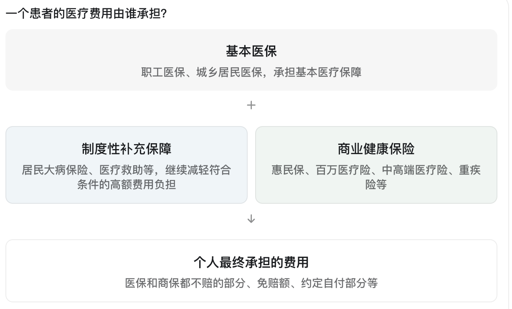
保险公司主要的健康医疗保险主要包括：
1、百万医疗险（最典型）——如人保财险“人人安康”百万医疗险
一种保障方案为典型的费用补偿性医疗险：1万元以内的符合条件费用按30%比例赔付，超过1万元部分的赔付比例可达100%。所谓百万，是指保额可达数百万。
一般有 1 年不保证续保型，6 /20 年每期 1 年保证续保型。
保险公司主要看每年承保与定价。
2、长期医疗险——如人保健康与蚂蚁保合作的“好医保·长期医疗（旗舰版）”
公开方案包含一般医疗20年保证续保，以及特定癌症、心血管疾病医疗保障的终身保证续保安排。主要解决假如今年投保、明年患癌，未来医疗费用可能持续多年，如果保险合同不能保证续保，就存在到期后无法继续投保相同保障的风险。
保险公司主要看未来多年医疗通胀、发病率变化、创新药费用和续期赔付风险。
3、惠民保（普惠性）——如北京普惠健康保
主要面向城市参保群体，强调普惠性和对基本医保的补充。相较一般百万医疗险，惠民保往往具有参保门槛低、年龄限制少、部分产品允许既往症患者投保等特点，但通常也有较高免赔额、分段赔付比例和特定费用责任限制。
一般由地方政府指导，多个商业保险公司联合体共同承保
4、重疾险（支付一笔钱）
假设一个人购买了保额50万元的重大疾病保险，后来确诊癌症且满足合同约定的重疾给付条件。保险公司就可能一次性给付50万元，用于日常生活开支和治疗。
人保集团旗下按照核心重点业务来分（各自有交叉）：
人保财险：百万医疗、意外伤害险
人保健康：百万医疗、长期医疗险、护理险
人保寿险：重疾险
城乡居民医保 9.42 亿人，人均筹资 1070 元，其中 2/3 来自财政补助。职工医保在职和退休比例从 2.82 下降到 2.60。创新药创新器械疗法增加潜在开支。如果未来基本医保无法覆盖越来越多的昂贵治疗开支，商险又无法承接，个人卫生支出边际趋势就会上升。
商保百万医疗在基本之外理赔，1 万元免赔额过滤 80% 的住院需求，2 万元过滤 93%，3 万元过滤 99%。理赔率不到 30%。各地的惠民保标准混乱，商业险条目看懂的门槛高，消费者信任度低。
2026 年两会要求商保承担历史责任，总理提出财政部直接出资补贴 5 年培养买商保习惯，金监局反对直接补贴，26 年5 月金监局换帅丁向群（前人保书记董事长），之后加速推进示范条款落地。
当前百万医疗口径商保在保 1.1 亿人，目标商保 3-5 年扩张到 3 亿，带病体保险从 0-2 亿（合计到 5 亿），商保报销比例从不到 30% 提升到 60% 以上。
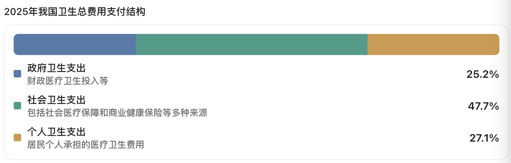
重点规范了24个常用概念，包括免赔额、合理且必要、首次投保等，并明确保险责任、赔付标准、续保条件、责任免除、理赔材料和服务时限等。
首版商保药品推荐清单包括 1 类创新药 25 款，2 类改良型新药 2 款，其他药械 31 款，重点覆盖肺癌、肝癌、血液肿瘤以及神经母细胞瘤等疾病所需的高价值药械，58款药械主要从已有百万医疗险、惠民保的特药清单中筛选而来，与存量产品高度重合，因此新增赔付责任不大。中保协没有与药企议价比价能力缺乏价格谈判机制，导致行业认可度一般。医保局的创新药目录纳入了医保谈不下来的罕见病用药、心脑血管药等，带有强制商保承接的政治属性。
凡采用这次短期或长期一般医疗险示范条款的产品，其约定的院外特定药械清单需要覆盖58款推荐药械；保险公司还可以自主扩充药品保障范围。惠民保不适用配套的58 款药械清单。
本次发布的是行业示范条款，非强制要求全部存量保单统一升级。对新销售的长期医疗险、一年期不保续的百万医疗险的潜在影响最快。
定位上责任要比惠民保好的多，价格（200-400）低于传统百万医疗，直接替代现行惠民保，并严重挤压基础百万医疗险。和中端医疗险（1500 左右）、长期医疗险、防癌险互补，其基本不受冲击。
直接调用国家医保数据分层，按风险分档（健康、次标、带病）设置待遇，无需健康告知。传统百万医疗险存在逆向选择的问题（传统模型中 1/3 的风险来源），且带病体难以参保，医保数据参与核保可以改善这两个问题。
预计在甘肃四川等地试点。财政部拟补贴保费 20%-30%，
保费分配角度目标如下图，政府参与后可以降低渠道获客成本，从而把更多保费留给赔付，同时仍为保险公司保留利润空间。属于一种费用空间向保障责任转移的机制，保险公司不一定牺牲利润。
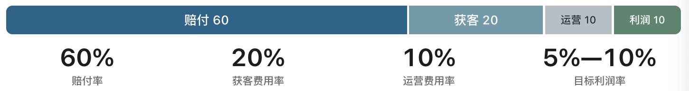
目前通过互联网保险经代平台（蚂蚁保、微保、水滴）渠道费用高，侵蚀保险公司利润和消费者的赔付保障，百万医疗险主要是财险公司卖，险企合作利润率低，只是拉高保费规模。2027 年健康险将重点推行报行合一。未来的商保改革趋势应该是：政府信用与医保渠道降低获客成本 + 报行合一压缩不合理销售费用 + 产品端适度提高赔付率。
人保财险意健险 26H1 保费 876.1 亿，COR99%，利润 3.6 亿，拥有低利润率的大规模健康险业务。如果未来承接的省级新产品能够实现更高的利润率，就会改善健康险的利润结构。
由于人保和太保的业务规模比较大、地方政府合作经验丰富，受益于业务结构改善和新承接的业务，两家公司后续承接的省级业务如果合计获得 50%，新产品年保费可以达到 150 亿元，扣掉存量替代之后，两家公司净增保费可以达到 79 亿元，税前承保利润 8.6 亿元。
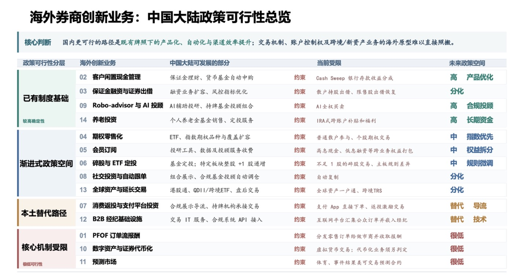
Robinhood收入结构演变
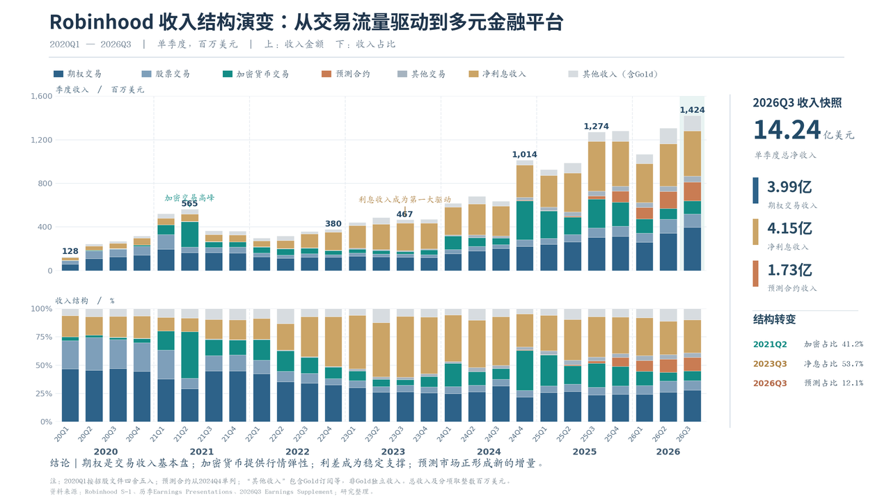
业务模式：投资者向 Robinhood 提交股票买卖订单，Robinhood 接收订单来选择执行的做市商，做市商向 Robinhood 支付订单流报酬并完成交易，这个过程中相当于做市商将买卖价差的一部分让渡给为其提供订单流的 Robinhood。
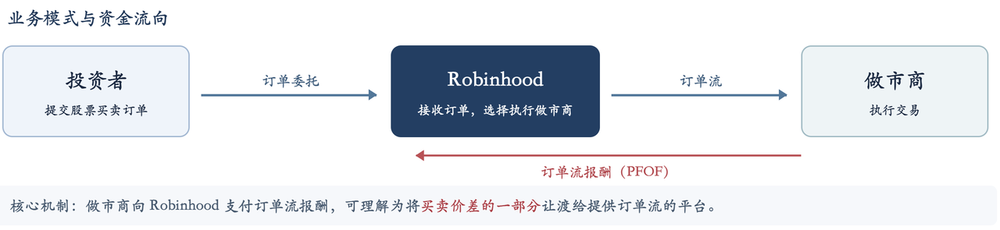
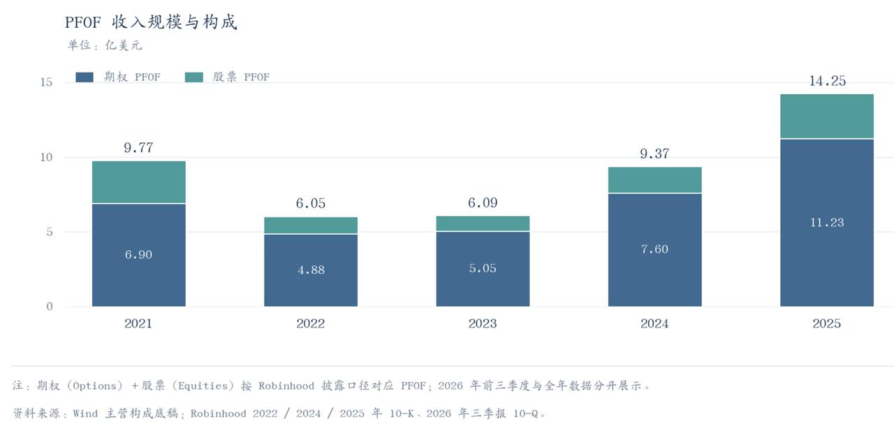
我国情况：A 股主要采用交易所集中撮合，证券公司接受客户委托后，按交易所规则代理交易，股票做市主要集中在科创板、北交所、创业板。欧洲已经走向相反方向，欧盟 MiFIR 禁止证券公司收取 PFOF，原有的过渡豁免已经在 2026 年6 月 30 日届满。
未来：涉及到市场公平、交易透明等一系列政策，A 股市场可预见的未来不会推进相关制度的变化。
业务模式：美国部分券商已经能够通过客户的闲置现金赚取类似商业银行的存贷利差，通过合规的业务结构，利用客户闲置现金产生利息收入，而且这是一项规模非常大的业务。投资者把钱存进证券账户中，部分长期闲置的现金通过券商的现金管理安排存放到合作银行等，银行支付的收益一部分归平台，一部分支付给客户。
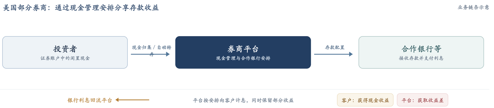
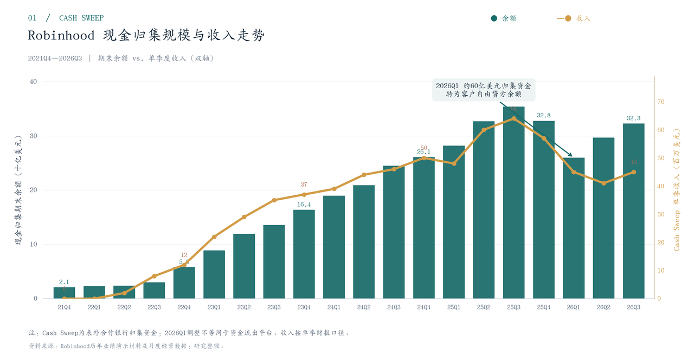
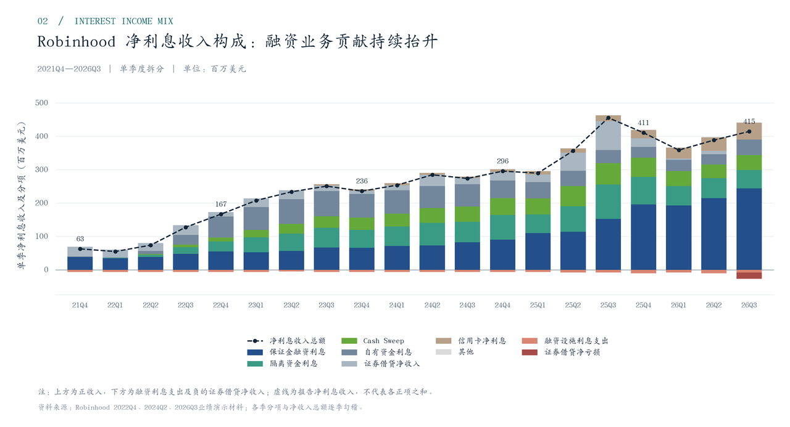
我国情况：证券公司客户的交易结算资金存放在商业银行，独立于证券公司自有资产。当前券商客户保证金余额管理产品，一种是相当于客户借钱给券商，券商通过资金运用利差来获益；一种是证券账户的货币基金自动投资业务，券商获取基金销售的渠道收入和客户粘性。
历史上，2004年前后，中国证券行业曾发生过比较严重的客户保证金挪用问题。当时一些证券公司将客户资金用于其他业务，最终在市场下跌时暴露巨大风险。
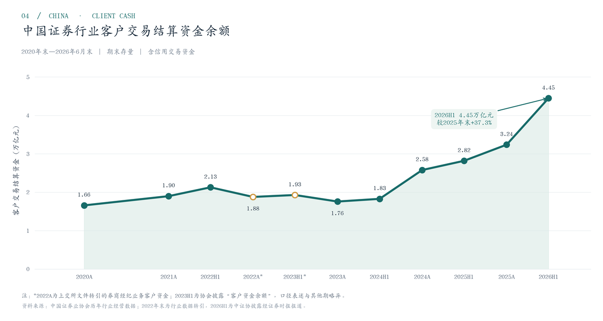
未来：当前的模式即客户资金自动购买合规现金管理产品已有基础。未来发展方向主要是提高自动化程度、流动性体验和产品丰富度。
业务模式：保证金融资是券商向客户收取融资利率，客户将融入的资金继续投入到股票市场上去。证券出借是平台在客户同意后把符合条件的股票借给卖空或其他交易的机构，并收取借券费。
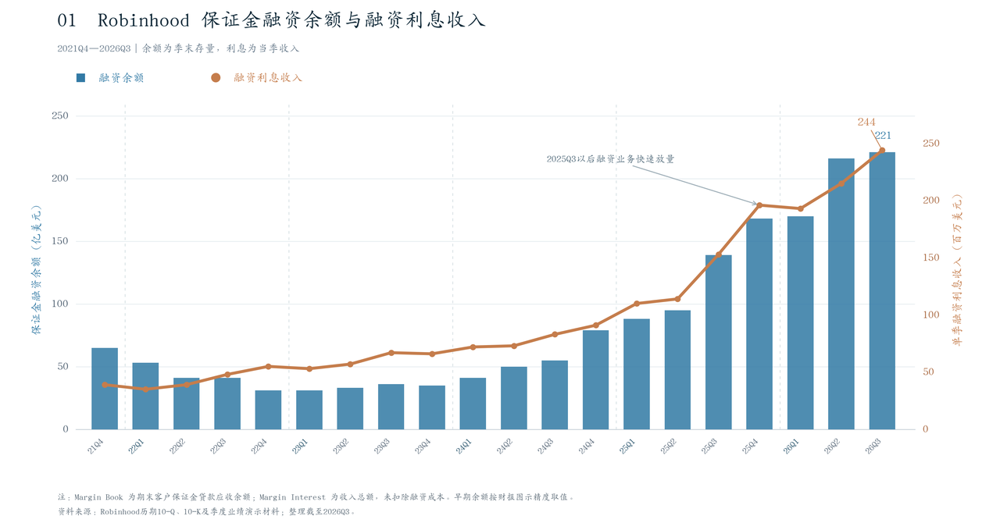
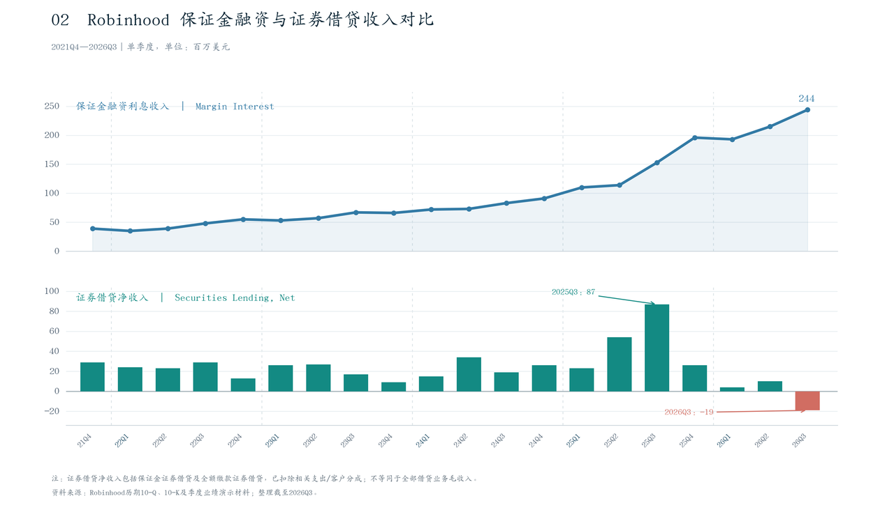
我国情况：和我国的两融业务基本类似，但中国的两融业务更多受到保证金比例、标的风控等多种限制，监管会逆周期调整杠杆。融券业务只能通过证券公司自有证券开展。
2026年11月初，证监会明确提出研究优化融资保证金比例、证券折算率及维持担保比例等指标，在风险可控前提下适度释放融资空间，目的转向适度释放杠杆，稳定市场流动性。（23 年 8 月份融资保证金比例从 100% 降到 80%，2026 年 1 月收紧升至 100%）。可冲抵保证金证券折算率提高已有持仓的保证金价值，释放存量融资能力。维持担保比例目前没有法定最低平仓线， 2026 年 11 月初，部分券商在市场下跌期间，将客户补足担保物的期限从当日放宽到次日。报道还指出，部分券商仍采用130%平仓线、140%—150%预警线作为内部风控安排。
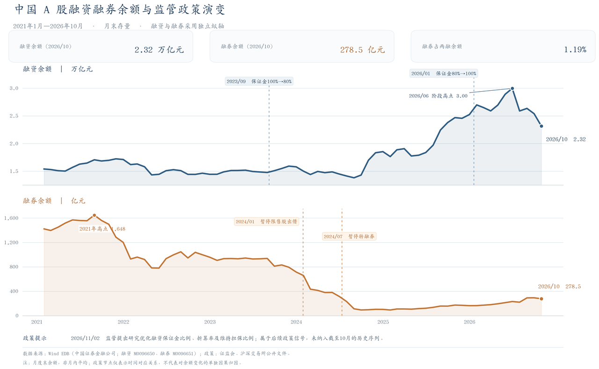
未来：机构层面的融券恢复完善可能性较大，存在逆周期调整空间。散户股票出借涉及投资者保护等，未来可能性偏低。限售股出借未来恢复的可能性也偏低。
业务模式：投资者用较少的初始资金直接购买看涨或看跌期权，获得较大的方向性敞口。零售券商（Robinhood）的收入来自于期权合约佣金、订单流报酬等服务，其他散户和机构，或者专业做市商（如Citadel）可以成为对手方承担风险，通过报价价差和风险对冲赚钱。
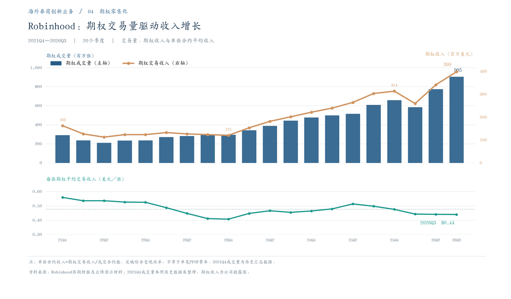
美国上市期权市场成交规模持续扩张，2025年全年成交量达到152.1亿张，较2021年增长约54%。其中个股期权成交82.7亿张，占比54.4%，ETF期权成交56.8亿张，占比37.3%，指数期权成交12.6亿张，占比8.3%。美国拥有规模庞大的标准化个股期权市场，为零售券商发展期权交易业务提供了丰富的产品供给。
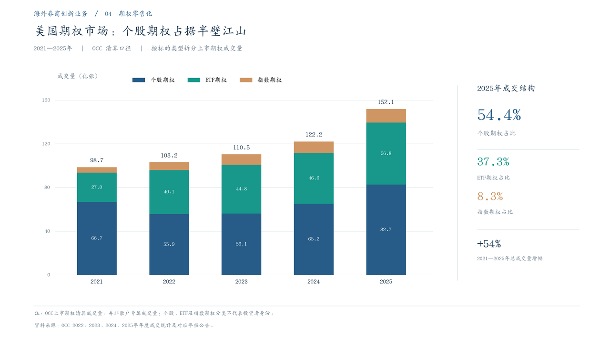
我国情况：一种是场内股票 ETF 期权和股指期权，一种是券商场外期权。常规上市的股票类期权主要是 ETF 期权，ETF 实物交割。股指期权主要围绕指数，现金交割。场外期权是券商复杂衍生品业务的重要组成，券商根据要求设计并报价合约。我国缺乏广泛标准化个股期权市场，场外期权仅允许专业机构投资者参与，场内期权对合格个人投资者有硬性要求，部分对冲工具及证券借贷渠道受到限制。
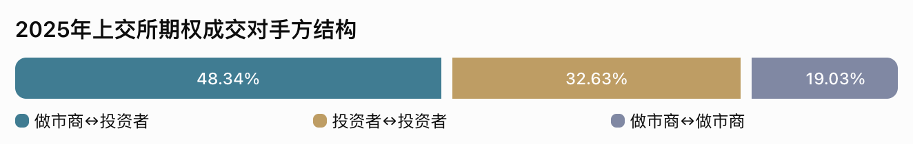
2026年5月15日正式发布《衍生品交易监督管理办法（试行）》，将在2026年11月16日施行。主要管的是场外衍生品。
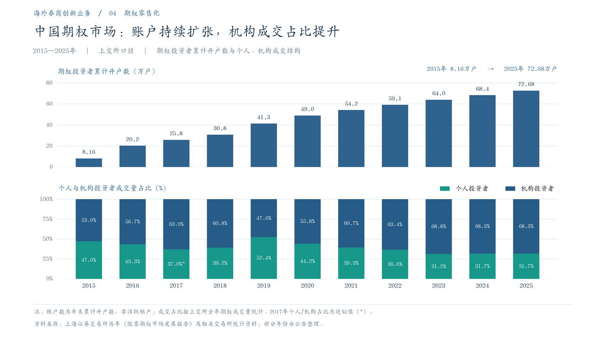
未来：2026年4月证监会深化创业板改革文件明确提出，丰富创业板相关ETF和期权品种，适时推出创业板股指期货。指数、ETF 期权有望进一步扩容，但短期全面放开面向普通散户的个股期权啊和高杠杆衍生品不太可能。
业务模式：Robinhood Gold的订阅未 5$/月 或 50$/年，权益包括更高的合格现金收益率、部分保证金融资免息、期权期货费率优惠、符合条件的退休账户奖励等。券商收订阅费，扣除利息补贴返现等成本，可以带来更多资金进入、提高融资余额、交易活跃度等和财务费管理等。
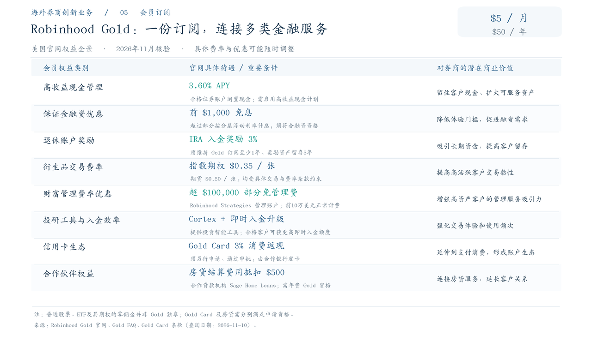
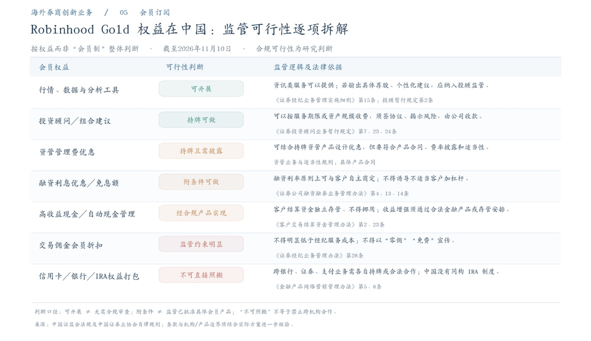
我国情况：目前没有跨银行、券商、信用卡和财富管理的一揽子会员体系。付费服务偏向行情、数据、研究工具等。《证券经纪业务管理办法》要求不得收取明显低于成本的佣金。
未来：专业投资工具和投顾订阅可行性高，收费类目中交易佣金、融资融券利息、资产管理费和投资顾问费，法理基础可以按照券商提供了投资策略、基金组合配置或咨询服务。
但高现金收益率、低融资成本存在障碍，涉及低佣金返现返佣，限制比较明显。对于提高保证金利率没有明确依据，。降低融资成本可能会被认定为诱导不适当的客户开展融资融券业务。
业务模式：降低股价较高的股票的投资门槛，ETF 自动定投带来的持续上升的佣金收入和更高的留存。假设每股 500 本币时的起投金额示意图如下：
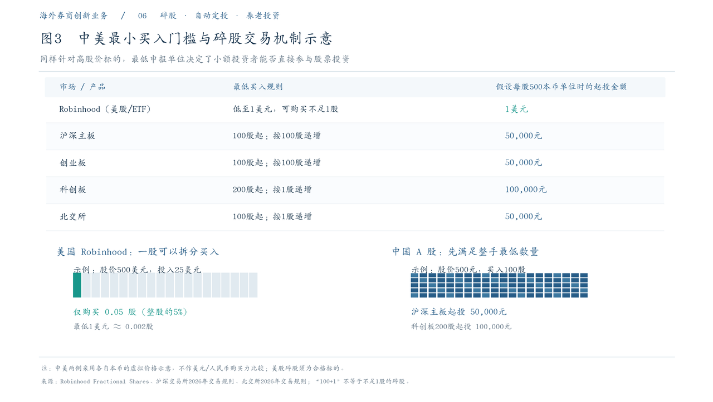
我国情况：普通竞价交易买入证券，申报数量一般仍须为100股（份）或整数倍，零股卖出则依照规则处理。ETF二级市场交易通常也是100份起。
未来：碎股交易存在创新空间，涉及证券所有权登记、分红表决资产隔离等问题。2023 年沪深交易所提出过拟调整为100股（份）起、以1股（份）为单位递增的方向，但是至今“100+1”方案并没有落地，科创板和北交所实现了 1 股递增。
业务模式：欧洲 Trade Republic的 Saveback功能，符合条件的刷卡消费按照比例产生返投奖励自动投入客户指定的定投计划。 日本的 PayPay App可以直接打开 PayPay 证券小程序完成开户和证券投资，通过支付余额或积分购买股票、ETF，其积分和余额还可以在不开证券账户的情况下随所选投资模拟组合的价值变化而变话，退出时获得的仍然是积分。
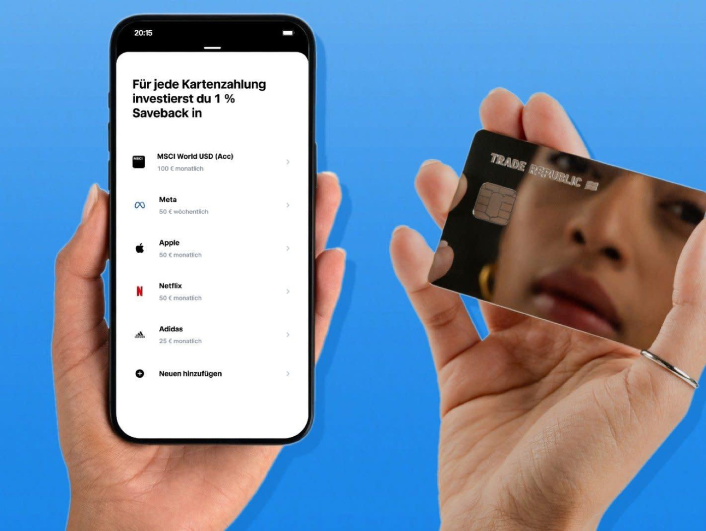
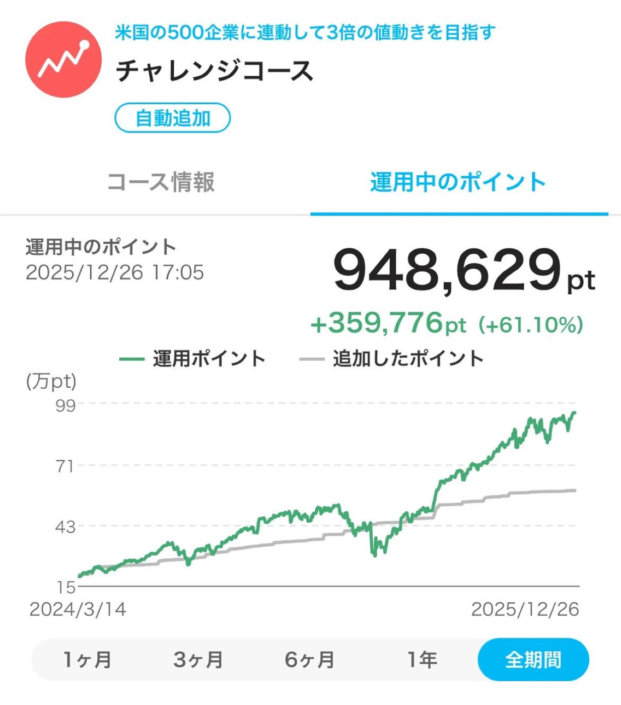
我国情况：2026 年 4 月发布、9 月 30 日实施的《金融产品网络营销管理办法》，将第三方互联网平台定位为金融产品的营销与信息展示渠道，为客户提供金融产品购买转接渠道时，应当跳转至金融机构自营平台。支付宝App可以在同一生态内购买基金，蚂蚁（杭州）基金销售有限公司是持牌基金销售机构，微信理财通销售的基金对应的是腾安基金。公募基金禁止采取抽奖、回扣、赠送实物、保险、基金份额等方式销售基金。
在现行的法律和管理办法下，合规的互联网营销流程如下图：
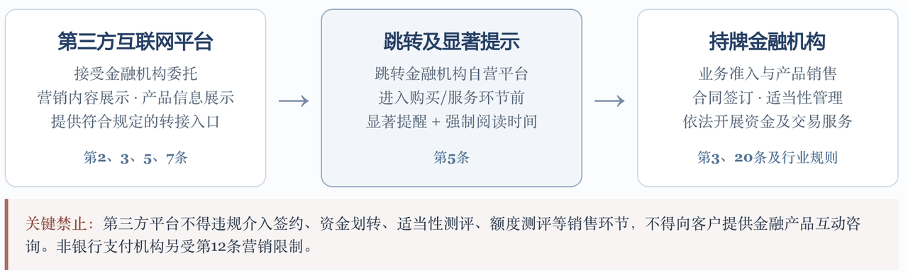
未来：通过互联网平台渠道进入持牌金融机构的体验会更便利，继续创新发展可预见。但支付 App 直接接受股票交易、返现诱导开户交易的可行性低。
业务模式：eToro上的 CopyTrader，CopyTrader可以自动按比例复制被跟随投资者的交易，用户可以自行设置复制金额、暂停或停止复制；复制功能本身不额外收费，但正常交易费用仍适用。优秀投资者公开策略和组合，其他用户查看历史表现并跟随，用户投资金并执行复制交易，平台沉淀交易收入提高留存。
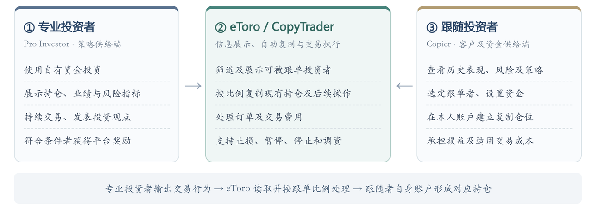
eToro依靠多资产交易和社交投资生态实现了客户规模和交易活跃度的提升。入金账户从2023Q1的289万户增至2026Q2的428万户。客户资产规模中，权益资产由2024Q2的45亿美元增至2026Q2的112亿美元，成为资产增长的主要贡献来源。
跟单和自动化交易正在改变用户的平台交易行为，2026Q2资本市场交易笔数同比增加64%，单笔投资金额下降42%，公司在业绩演示中介绍这一变化是由跟单和自动化交易增加带来的。
26 年 Q2 eToro资本市场交易业务的净贡献同比+25%，
我国情况：雪球已经实现社交和模拟组合，其他用户可以查看组合收益和投资逻辑。国内基金投顾试点允许符合要求的机构在客户事先授权范围内，代客户决定基金品种、数量及买卖时机并执行申赎。如富国基金投顾、蚂蚁“帮你投”、盈米“且慢”提供手动跟投和按策略的自动跟投。
监管层面，《证券投资顾问业务暂行规定》、《证券法》都有限制，禁止券商接受客户全权委托、未经委托擅自买卖证券及诱导不必要的交易。大 V 跟单模式可能会带来股价被推动拉升，操纵股价。而且 A 股整手交易限制会让小资金难以精确复制。
未来：社区公开展示组合和收益，持牌投顾建议+客户自主交易是完全可行的，专业基金投顾组合自动复制及调仓的试点有政策支持，发展确定性较高。但 普通 A 股账户自动复制短期可能性较低。
业务模式：智能投顾系统根据用户风险承受能力、期限和需求生成组合，定期监控持仓比例。券商按管理资产规模收取管理费。最典型的代表是 Betterment、Wealthfront、Charles Schwab 和 Vanguard。
客户填写问卷—系统判断风险承受能力—自动建立 ETF 投资组合—根据规则再配合。美国已经允许投资者把一部分账户的持续投资决策权，正式委托给合规的投资顾问机构，再由算法自动执行。
Wealthfront资产规模突破1000 亿美元（2026 年 8 月），2026年7月投资顾问资产占平台资产的比例已升至54.7%，较24 年初49%逐步提升。
Wealthfront现金管理收入作为基本盘，投资顾问收入持续上升，FY26的投顾收入 达9190万美元，占比已超 25%。
FY26 调整后 EBITDA 打到 1.71 亿美元，毛利率保持稳定。
我国情况：基金投顾试点允许符合要求的机构在客户事先授权范围内，代客户决定基金品种、数量及买卖时机并执行申赎。AI 辅助解释财报、分析持仓、总结市场帮助客户理解和判断已成熟应用。国泰海通君弘灵犀、华泰 AI 涨乐+省心投（智能问答、投资辅助+公募基金投顾）、蚂蚁帮你投由基金投顾试点资格的蚂蚁投顾提供基金投顾服务。
未来：2026年4月10日，证监会将《证券基金投资顾问业务管理办法》列入年度立法计划中“需要抓紧研究、择机出台”的项目。AI 辅助投资将会快速普及，基金投顾的自动化程度提高较具确定性。但 AI 自主管理不太可能被直接放开。
业务模式：Coinbase、Robinhood等，客户通过平台买卖虚拟货币，平台收取例如 0.5%的有效交易费用或点差，类似传统证券经纪。Coinbase净收入结构如下图：
Coinbase 2026Q3的5.70亿美元订阅及服务收入中，分为稳定币、区块链奖励&质押、利息&融资、其他。其中稳定币相关收入达到3.07亿美元，约占54%。
加密资产在交易高峰阶段为券商提供牛市业绩弹性。2021Q2加密收入占交易收入 51.7%，2024Q4一度达到 53.3%，2026Q3 仅占 13.8%。
circle发行稳定币，用户更方便跨境转移和7*24使用数字美元，发行商用美元储备去获取利息收入。
证券代币化把资产和付款上链，降低结算对账成本和付款不交券的风险。截至最新统计日，美债相关资产约140.4亿美元，占总量35%；私人信贷83.4亿美元，占21%；股票及ETF约38.8亿美元，占10%。主要资产是固定收益和机构资产。
我国情况：2026年2月八部门通知明确，境内虚拟货币相关交易业务属于禁止性监管范围。
2026年4月10日，香港金管局向碇点金融科技有限公司和汇丰银行发出首批稳定币发行人牌照。目前 HKDAP 和 RedCoin这两款持牌港元稳定币合计流通大约 2 亿港元，仍然处在很早期的商业化阶段。未来应用场景有代币化基金、企业支付和跨境贸易。
未来：中国大陆未来面向普通投资者的虚拟货币现货交易，未来几年开放可能性很低。
业务模式：Robinhood、Kalshi。推出对未来的预测合约，可以围绕更广泛的事件结果设计合约，例如经济数据、天气、体育比赛以及其他符合交易平台及监管要求的事件。
Robinhood预测合约从 24Q4起步到 26Q3达到 1.73 亿美元，已占交易类收入的 20%。超过同期的股票和叫你相关业务。
2025 年 8 月以来合约成交量逐步提升到 26Q3 的 164 亿份，单位变现略有下降到 1.05 美分/份。
Kalshi 近年的增长主要由体育合约驱动，大选、世界杯期间增幅更为明显。
我国情况：涉及未经批准开展衍生品交易、交易场所管理，以及部分事件可能涉及的赌博监管问题。
未来：预测市场在我国大陆开发的可能性非常低。
业务模式：DriveWealth本身持牌，其通过 API 提供经纪账户、交易处理、清算、托管及报告等服务。可以在消费金融平台等嵌入股票投资。美国允许金融科技公司通过持牌合作机构嵌入证券投资业务，实际承担经纪职责的持牌的券商，流量入口赚的还是 PFOF 的钱。
我国情况：同花顺、雪球、微信微证券作为流量入口，用户可以选择合作券商进行开户和交易，开户和交易由证券公司负责。收入主要来源于广告与互联网推广和增值数据工具服务。
中国的 B2B的交易技术供应商有：恒生电子600570.SH、金证股份600446.SH、顶点软件。其出售给券商的是安全高效运行经纪业务的底层技术系统，赚的只是软件和技术服务的费用。
2026 年 8 月 28 日，中国证券业协会和基金业协会联合发布：《证券公司交易信息系统接入管理规范（试行）》，允许券商向合规经纪客户开放接口，例如某私募基金通过自身经过验证的交易系统接入发送指令。但是不允许普通互联网平台汇总公众订单传给券商。
业务模式：全球化的互联网券商（如盈透Interactive Brokers）在一个平台下提供多个可交易市场和产品，同一账户体验，覆盖40 个国家和 170 个交易所或市场中心。支持盘前盘后隔夜交易的券商，可以让客户更早提交或执行符合条件的订单，Robinhood在 26Q3公布了针对美股全天候交易的产品规划。提供隔夜股票交易可通过符合要求的另类交易系统 ATS 等渠道执行。
我国情况：2026 年 5 月 22 日，证监会公布进一步整治非法跨境证券业务的安排，对境外券商违规服务中国大陆客户提出更严格的限制。个人投资者开通港股通需要满足条件，投资全球资产可通过 QDII 与跨境 ETF。6 月下旬通过窗口指导要求券商暂停新增 TRS 业务。
2026 年 7 月 6 日：沪深交易所正式扩大盘后固定价格交易的适用范围，普通A股和ETF也可以参加15:05—15:30的盘后交易。
未来：一方面，发展港股通、QDII、跨境ETF等可控的境外投资渠道；另一方面，限制通过跨境TRS、境外互联网券商等渠道形成监管难以掌握的跨境投资敞口。盘后固定价格交易继续完善，适度延长 A 股连续竞价时间有政策空间。
业务模式：Robinhood退休业务经营的是美国养老第三支柱的中 IRA（个人退休账户），中国的个人养老金制度预期类似。Robinhood退休业务推出后快速扩张，2023Q1 到 2026Q3 退休账户数由约 22 万户增长至 228 万户，托管资产由 3 亿美元增长至 366 亿美元。
我国情况：个人养老金公募基金Y份额规模由2022年末的20.05亿元增至2026Q3的276.65亿元，规模扩大至约13.8倍。基金定投功能方面在支付宝、天天基金等已经比较普遍。
未来：个人养老金销售、基金定投的进一步发展是可以预见的，这些方向和长期资金入市相契合，也有成熟的制度基础。
个人非车是财险的增长的核心，增量来源于 健康、家庭、消费等新场景。管理层强调个人非车险具有风险分散、大数法则适用性强的特点，当前盈利水平较好。未来增长空间相对明确，需要关注边际综合成本率变化。
数据：2020—2025年，中国财险个人非车险保费由191亿元增至558亿元，CAGR达23.9%；2026年前三季度实现保费503亿元，同比增长16.3%，贡献财产险保费增量的97%。
目标：以2025年558亿元为基数测算，2030年达到千亿规模对应未来五年CAGR约12.4%，管理层认为有挑战性但有信心达成。
增长点1：健康险：事后赔付转向事前干预 & 健管业务独立创收
围绕“医、药、护、研”构建健康管理平台，服务前移到疾病筛查、慢病干预和药品直付，从而降低赔付成本。企业健康险用健管服务降低疾病风险以及提高粘性，同时收取健康管理费用 公司布局药品产业链降低实际医疗成本，后续药品直付比例有望提升 带病体保险拓客：以往难承保客户纳入业务。
健康管理是在传统保险业务之外的附属业务，带病体保险处于起步阶段，可以长期关注其增长，以及该业务的进入稳定盈利的时间。
数据 ：健康管理基于目前 1600 亿元保费，公司认为该业务空间有 400 亿。院外特药：减少 2500 万损失（减损率 18%）
目标：①带病体产品计划：十年内实现100万名患者管理、撬动百亿元价值规模。
②企业健康险：理赔支出下降空间为 8%，法人客户联合拓展的健康管理服务收入达到6亿元（目前 25A健管总收入5亿元）。
③医疗险：“十五五”期间，公司计划针对20%的重点理赔客户开展干预，推动整体医疗险赔付率下降2%。如果这一目标实现，意味着每100亿元对应医疗险保费可减少约2亿元毛赔付支出。
增长点 2：科技险：当前起步积累阶段成本已优于传统法人险
科技险目前的成本已优于传统法人险，考虑其前期以积累数据、完善模型为主，相比同业主要的先发优势明显，2028—2029年风险减量效果逐步显现，2030年前后进入价值释放阶段，带来的盈利会更显著。盈利释放预计滞后于规模增长。
数据：2025年中国人保广义科技保险保费达209亿元，市场份额居行业首位。2026H1科技活动保险保费同比增长18.5%。
目标：公司预计“十五五”期间，乐观情景下科技活动保险保费突破100亿元，并带动广义科技保险迈向千亿规模。以2025年209亿元测算，2030年实现千亿规模对应CAGR约36.8%，显著高于个人非车险千亿目标所需的12.4%。
2025 年1 月，《关于推动中长期资金入市工作的实施方案》以及证监会提出力争大型国有保险公司从2025年起每年新增保费的30%用于投资A股，餐叙中提到实际工作当中30% 的标准偏硬性。叠加利率中枢下行、传统固收资产收益率下降，保险资金增配权益的趋势较为明确。
新准则下，TPL 变动直接进当期损益，高股息OCI资产既能提供经常性投资收益，又能降低短期市场波动对净利润的冲击。2026H1中国财险FVOCI股票占股票投资的57%，高于集团整体43%的水平。在权益配置中枢抬升的过程中，管理层表明保险资金会进一步把权益资产从两边（OCI 分红和 TPL 成长）向中间（TPL 价值）靠拢，27 年TPL 价值份额可能上升。
当前OCI 分红账户目标股息率 5%，要求长期跑赢红利指数。TPL 价值账户股息率目标 3%，追求更高的隐含回报率。 TPL 成长及时兑现浮盈收益。
非车险盈利中枢：2026 年前三季度非车险 COR 达到 98%，明显好于 25 年 100.8%。如果剔除季节性大灾、准备金重估以及险种结构变化，未来非车险可持续的综合成本率能否稳定在 98% 左右？
个人非车险的盈利能力：公司此前提出个人非车险要从 2025 年的 500 多亿元保费规模向“十五五”期间超过 1000 亿来发展，今年上半年个人非车险的增长也比较快，达到 18%以上。目前个人非车险业务的 COR 在这样快速增长的目标下，能否维持历史上较好的盈利效率？（25H1 披露 89.9%）
法人业务：公司过去法人业务整体承保盈利能力相对较弱，今年借助非车险综合治理，上半年已经有 6% 左右的比较明显的改善。目前报行合一的费用改善有多少已经反映在业绩中？随着后续险种综合治理的逐步完成，2026年下半年及2027年是否仍有进一步释放的空间能够实现承保盈利？
车险 COR 的底部：2026 年前三季度考虑到大灾，车险 COR 仍然维持 94.3%，已经处于较优水平。未来人伤赔付标准提高、新能源渗透率上升，管理层如何看待未来 3-5 年的车险常态 COR？当前的低成本率有多少是可以持续的？
分红：公司的分红政策追求 全年 DPS 长期稳定增长，但考虑到新准则 TPL 账户对利润影响比较大，2026 年净利润同比来看压力比较大，公司当前的DPS是否还能保持稳定增长？
投资：Q3 的投资波动对单季的利润影响比较大，未来会希望把权益资产的利润表波动控制在什么程度？FVTPL 权益仓位会不会结构性下降？未来对长期投资收益率和单季利润稳定性的综合战略是什么样的？
2025 年，财险、寿险、健康险三家子公司分别贡献 69.8%/18.7%/13.0%。
1、2026 年前三季度，车险保费 yoy+0.1%，车险当中新能源汽车的增长yoy+31%，是增长的主要动力，新能源车险在车险保费里的占比超 22%，2024 年起新能源家庭自用车实现承保盈利。
2026 年前三季度，财险保费仅增1.7%，但承保利润增长 11.3%，承保盈利能力带动。人保归母净利润同比 -32%，但同期财险承保利润+11.3%。
2026 年上半年，财险的原保险保费份额市场占比 33%。
2、财险的优势：综合费用率低，2023-2025 年的赔付率上升（70.4%->74.4%），但综合费用率下降更多（26.5%->20.9%）。意味着综合费用率-1.6%。主要来自于车险综合改革和“报行合一”监管。
报行合一
3、非车险 yoy+3.2%，车险的增长动力明显偏弱。非车险整体依旧不盈利。
2016 年以来 TTM 归母ROE 历史 P10% - ROE 标准差，纵轴代表历史盈利下限水平，横轴代表 ROE 的波动。
中信证券的历史P10为7.18%，在22家可比券商中排名第一。波动率处于低波动梯队，ROE 标准差为 1.62%，明显低于样本中位数 2.50%。在大型券商中仅仅略逊于华泰证券。中信证券兼具较低盈利波动与较高盈利下限，历史ROE呈现出区别于多数同业的稳健性特征。
过去 10 年行业普遍变得更稳定，中信证券属于一直以来的高下限，低波动的“好学生”。在不同的周期阶段中始终维持着同业第一的盈利下限。
从时序上看，中信的相对盈利优势具有很强的持续性， TTM 归母 ROE 在 2017 年之后 连续 39 个季度高于行业中位数，其中33 个季度高于行业 P75 水平。2026Q3中信的绝对ROE环比回落，但相对优势仍然保持高水平。
在行业整体 ROE 处于低位时，如 2018 年、2024 年，中信在行业低景气时依然保持较高的资本回报，期间ROE中位数为7.28%，居于行业首位，明显领先于行业低景气ROE中位数4.54%，具高盈利下限与较强抗周期韧性。
在全行业 ROE 同比下降的区间中，下行捕获率反映了 ROE 的抗跌水平。当行业ROE下降1个百分点时，中信ROE的历史同期下降幅度仅约0.58个百分点。中信位于下行防御能力第一梯队，在大型券商里排名第一，全样本中排名第三。相比之下，华泰为0.65、招商为0.87、广发为1.03、国信为1.56。
综合考虑上行捕获和下行捕获来看，其上行捕获率71.25%，下行捕获率57.53%。上行捕获强于下行捕获，属于优质的防御型券商。
从 beta 来看，中信证券β为 0.72，R2 为 76%，中信仍具有较强的行业周期关联性，但变动幅度相对温和。
中信证券经营波动从收入端到归母利润端均处于全行业较低水平。中信证券营业收入、营业利润及归母净利润波动率分别为6.29、3.92、2.71个百分点，在22家可比券商中分别位列第5、第5和第4低。
一般来说，从波动传导看，收入到归母净利润的波动率会逐级压缩，压缩能力反映了企业平抑收入波动、稳定贡献利润的能力。
中信的相对优势体现在其营业收入本身波动较小的情况下，从收入到利润的压缩能力依旧保持较强能力。尤其是营业利润到归母净利润的波动压缩能力更强。
相较华泰证券，中信收入及营业利润波动略高，但最终归母利润波动反而更低，反映了公司整体在所得税、少数股东损益等营业收入外因素的实际缓冲。
中信证券的五项业务收入份额与波动贡献份额高度接近，而华泰、招商、广发、国信等券商均存在较明显的业务波动贡献集中现象。左边是各业务对营收的贡献，右边是各业务对总体波动的贡献。
中信并没有出现某项业务的波动贡献显著超过其收入份额的情况，份额和波动基本匹配。特别是投资业务收入占比已达35.50%，但波动贡献并没有进一步放大。
相比之下，华泰证券和广发证券投资业务的波动过大，其波动贡献较收入份额高出6.46% / 13.01%。国信证券手续费业务波动较大，波动贡献较收入份额高出13.12个百分点。
左侧衡量各项业务的绝对波动率，右侧衡量相对于自身业务规模的波动程度。中信的稳定性优势集中体现在手续费、投资和利息净收入等核心业务。其收入稳定性很大程度上来源于内部各个核心业务本身波动较小。
尤其是手续费和投资业务这两个合计贡献超八成的核心业务，中信在这两个业务上波动控制非常出色。
回顾历次市场逆风时期：
2018 年市场逆风时期，以华泰作为对照，中信证券归母盈利降幅显著低于华泰，主要得益于投资业务相对较小的负向冲击，以及营业支出调整与其他利润项目的共同缓冲。分业务看，中信与华泰投资业务净收入分别减少37.67、47.09亿元，对期初权益的负向贡献分别为2.51、5.39个百分点，投资业务冲击差异是两家公司盈利韧性分化的首要来源。
中信营业支出形成 1.24 个点的正向贡献，在 18 年逆风期对成本的控制明显强于华泰的 0.72%。
2022 年时期，中信的归母利润降幅在21家有效券商中排名第4小，较四家头部同业平均少下降2.05个百分点。中信经历投资、手续费及其他收入下滑之后，依靠营业支出减少等因素，将归母利润的标准化降幅控制在0.85个百分点。印证了其投资业务的韧性，以及成本控制的能力。
相对其他头部券商，其在投资、利息净收入和营业支出的韧性尤其明显。
2022年大部分券商都遭遇投资收入下降，中信投资业务标准化负贡献为1.92个百分点，不仅低于四家头部同业平均的3.66个百分点，也明显小于全行业有效同行中位数的4.26个百分点。
2023 年下半年到2024 年上半年期间，中信证券的手续费带来了超出同业平均的拖累。
中信证券2024年逆风期手续费业务的相对弱势主要由投行业务拖累（yoy -52.7%)，其本来的优势传统业务在一级市场萎缩环境下有很高的盈利敏感。横向看中信投行业务调整幅度明显大于头部同行。
过去三轮逆风期，中信在自营投资和成本控制方面展现出了相较于其他券商的优势，核心业务在行业整体下行区间保持韧性，是重要的正向缓冲。相对而言，中信证券的投行业务的规模优势具有一定周期性特征：在一级市场景气上行阶段有利于利润释放，但在市场调整、融资活动收缩时，也可能形成更大的收入下行敞口。
我们来详细一下自营投资 和 成本
过去5 年，券商收入结构中投资业务的占比明显提高，可比的18 家券商合计，其投资业务净收入占比近 4 成。中信证券的比例还要更高，已经形成了相对更高的投资收入依赖度。
相较于 10 年前，营收TTM上涨了 1.79x，投资收益已经扩大到了 3.31x，投资收入占比提升主要来源于自身收入规模扩张的驱动。
中信的投资业务的逆风韧性来源于两方面，2022 年投资的优势主要由收益端贡献，收益率强于同业 1.76%。2024 年收益率承压时，规模扩张又快于同业 0.70%，抵消了收益率端的回落。
中信自营投资收益率过去七年平均领先其他头部券商，投资杠杆也高于其他头部券商。当前中信证券每 100 元归母股东权益对应 293 元金融投资资产，产生 11.04 元投资业务收入。
中信长期具备较高的投资收益率中枢，是盈利韧性的重要来源，支撑其自营收入的长期基本盘。
从2023年末以来，中信OCI资产累计增长约1,274亿元，其中约90%的净增量来自其他权益工具投资；但2026年初以来，OCI净增量几乎全部来自其他债权投资。
成本控制方面，我们发现这几轮逆风期，中信的主动费用收缩并不大，主要是减值改善和其他业务成本的改善。
事件
11月2日上午，金融管理部门围绕进一步完善证券、基金、保险公司互换便利（SFISF）、股票回购增持再贷款政策工具分别召集相关金融机构召开座谈会。同日，中国人民银行公告显示，央行将于11月3日开展证券、基金、保险公司互换便利操作，互换期限1年，可视情展期。本次第三批目前有31家证券、基金公司申报需求，申请额度超过1000亿元。要求相关机构“报足、做实”工具操作量，特别强调拿到央票后尽快融资、开展投资。另外，近期证监会拟对为维护公司价值及股东权益所必需而回购股份（简称护盘式回购）作调整优化，正在研究融资保证金比例、可冲抵保证金证券折算率等指标的逆周期优化。
政策机制：SFISF通过“以券换券—质押式回购融资—权益投资”的方式，将券商持有的股票、ETF、债券等资产转化为融资能力。本质上是央行帮助券商升级抵押品，货币市场提供现金，券商负责投资和承担风险，理论上依然是券商增加权益风险敞口的杠杆投资行为。
操作特征：本次操作距离上次已逾 22 个月，从节奏和时机上来看具有明显的逆周期择机使用的特征。过去两批 1050 亿元已经多次展期，实际上是作为长期资金支持。
参与情况：2024 年首批 20 家机构的申请额度超 2000 亿元，本次 31 家超 1000 亿元，实际操作额有待观察。2025 年券商分类评价已经将积极参与 SFISF 相关工作纳入加分项，并增加自营权益投资相关评价指标，本次监管进一步强调“报足、做实”，机构存在监管政策激励。券商一般都会尽可足额顶格申报。
政策优化：互换费率本身比较低（20bp-10bp），下降带来的直接费用压降并不高，降费率主要是促进实际投资，缓解内部风控和投资约束。
历史复盘
第一批： 2024年9月24日央行首次提出SFISF，10月10日正式创设5000亿元额度，市场开始关注政策资金的潜在配置方向，当日红利、中字头、银行等板块走强，科技成长板块调整。10月18日首批20家机构获批，申请额度超2000亿元，操作细则及回购增持再贷款同步落地，当日上证指数上涨2.91%、创业板指上涨7.95%。10月21日首次完成500亿元操作，中标费率20bp，但当日券商板块并未领涨。10月25日媒体进一步披露，工行、农行等银行已参与相关质押式回购交易，政策融资逐步落地。
第二批： 2024年12月31日央行预告第二次操作，备选机构池扩大至40家；2025年1月2日完成550亿元招标，中标费率降至10bp，同时扩大合格质押品范围并降低质押登记费用。当日上证指数下跌2.66%、证券板块明显调整，次日市场继续下跌。相比首次推出时，市场对工具机制已有较充分认识，且首批500亿元实际操作规模与超2000亿元申报需求的差异已得到体现，新增操作的政策信号效应相对有限。
市场资金结构分化，逆周期承接需求
10 月以来，融资余额-1838 亿元，股票 ETF 净申购+3627 亿元，杠杆资金在撤退，ETF 资金逆势流入。SFISF 和股票回购增持贷款、及推动主动ETF加快建仓等方式，分别增强金融机构、上市公司及基金产品的权益购买能力，意在缓解市场下行时的资金承接压力，引导形成逆周期买盘。
融资成本较前两次明显下降。
11 月 2 日R007为1.41%，DR007为1.36%，两者利差约5bp（前两次利差为 23bp/15bp）。假设本轮互换费率维持10bp，券商SFISF 开展7 天回购的融资成本可能在 1.5% 左右（相比前两次-55bp/-42bp）,有利于改善权益投资的持仓经济性。
行业
短期估值修复先于盈利兑现。11月2日，中证全指证券公司指数上涨4.60%，部分券商个股涨幅超过6%，反映Q3 业绩的利空出尽和市场对稳市政策的积极预期。但考虑到SFISF规模、成本及回报，对行业短期利润的直接贡献预计相对有限。本轮政策对券商板块的影响首先体现为稳定市场预期、缓解流动性尾部风险及降低风险折价，推动估值修复；后续若市场逐步企稳、交投活跃度恢复，才有望改善行业盈利与ROE。
资金投向：Q3自营波动加剧，政策资金或更偏向稳健配置。 从前两批SFISF实际投向看，资金主要配置指数成分股及股票ETF，部分券商用于长期OCI权益投资、做市及方向性投资。本轮监管强调资金尽快落地，考虑到大规模资金配置的效率与风险控制要求，预计流动性较好、交易容量较大的宽基ETF及大市值股票仍是主要配置方向。
从券商资产负债表看，2026Q3行业交易性金融资产环比下降3%，其他权益工具投资及其他债权投资分别增长8%和2%，呈现出交易性资产收缩、OCI资产扩张的结构性特征。考虑到Q3自营投资收益大幅回落，且前三季度已积累较高盈利，券商Q4可能更重视全年利润稳定性及风险敞口管理，继续扩大高波动方向性投资的边际意愿或有所减弱。
监管资本：行业整体充裕，头部券商资本使用效率改善更具意义。2026H1行业平均风险覆盖率约285%、净稳定资金率约164%，整体远高于监管预警线，并不存在普遍性资本不足。 SFISF通过改善存量资产融资能力，并降低符合条件的专项权益投资对监管资本及稳定资金的占用，可能在不同比例增加监管资本消耗的情况下支持权益投资扩张。
点击姓名打开飞书原文，点击卡片标题收起或展开内容。
本周主要和带教，助理沟通后续有关实习以及线上安排，后续将进一步补齐
校内：本周主要在校内完成猕猴训猴五次，清醒猕猴实验五次，麻醉猕猴实验一次。由于目前学校严格要求学术诚信，对实验数据，实验记录，论文要求提高，对实验数据来源记录不明，实验结果欠佳的实验要求重新完成实验并记录。
实习：与带教进行沟通，主要聚焦两个方向先进行学习和分析（脑机接口，AI制药），另有储备方向：靶向核药。
对于上述提到方向，进行了简单梳理分析方向：
由于有以前分析基础，目前首先聚焦严肃医疗两个方向：适应症深挖，国外进展
进入大规模注册临床适应症
进入IIT人体试验适应症
各个技术路线潜在适应症
每个适应症模块按照：患者池，适应情况（不同程度），疗效证据（临床终点），支付手段，公司池（竞争密度）。不良事件定义等？
技术路线，公司池，试验信息（适应症，入组速度，初步结果等情况），入组标准，临床终点（功能性/技术性），不良事件，监管与支付，下一个节点
可以关注FDA与NMPA审批要求，以及国内外对应（预期催化信息分析与风险清单）
最好的方式是开发网站进行动态更新相关信息以及来源，而非手动采集
首先要对科学层面进行学习